<!doctype html>
<html lang="en">
<head>
  <meta charset="utf-8">
  <meta name="viewport" content="width=device-width, initial-scale=1">
  <title>arxiv digest — 2026-08-28</title>
  <style>
:root {
  --bg: #ffffff;
  --fg: #1f2328;
  --muted: #59636e;
  --border: #d0d7de;
  --card: #f6f8fa;
  --link: #0969da;
}
body {
  max-width: 980px;
  margin: 0 auto;
  padding: 2rem 1rem 5rem;
  font-family: -apple-system, BlinkMacSystemFont, "Segoe UI", Helvetica, Arial, sans-serif;
  line-height: 1.55;
  color: var(--fg);
  background: var(--bg);
}
a { color: var(--link); }
img { max-width: 100%; height: auto; }
pre, code { background: var(--card); border-radius: 6px; }
pre { padding: 1rem; overflow-x: auto; }
blockquote { border-left: 4px solid var(--border); padding-left: 1rem; color: var(--muted); }
details { margin: 0.6rem 0; }
summary { cursor: pointer; font-weight: 600; }
.paper-figures-scroll {
  display: flex;
  gap: 1rem;
  overflow-x: auto;
  overscroll-behavior-x: contain;
  padding: 0.75rem 0.25rem 1rem;
  margin: 1rem 0 1.25rem;
  border-top: 1px solid var(--border);
  border-bottom: 1px solid var(--border);
  scroll-snap-type: x proximity;
}
.paper-figure-card {
  flex: 0 0 min(260px, 72vw);
  scroll-snap-align: start;
  background: var(--card);
  border: 1px solid var(--border);
  border-radius: 12px;
  padding: 0.55rem;
}
.paper-figure-card img {
  display: block;
  width: 100%;
  max-height: 240px;
  object-fit: contain;
  background: white;
  border-radius: 8px;
}
.paper-figure-caption {
  display: block;
  margin-top: 0.5rem;
  color: var(--muted);
  font-size: 0.85rem;
}
.figure-strip-hint {
  color: var(--muted);
  font-size: 0.9rem;
  margin-bottom: -0.3rem;
}
</style>
  <!-- MathJax: renders $...$ inline math and $$...$$ display math, plus
       \(...\) and \[...\]. Loaded from the official CDN; works offline
       once cached. Configured to skip code/pre blocks so arxiv IDs that
       look like dollar amounts don't get mangled. -->
  <script>
    window.MathJax = {
      tex: {
        inlineMath: [['$', '$'], ['\\(', '\\)']],
        displayMath: [['$$', '$$'], ['\\[', '\\]']],
        processEscapes: true,
        processEnvironments: true
      },
      options: {
        skipHtmlTags: ['script', 'noscript', 'style', 'textarea', 'pre', 'code'],
        ignoreHtmlClass: 'tex2jax_ignore',
        processHtmlClass: 'tex2jax_process'
      }
    };
  </script>
  <script id="MathJax-script" async
    src="https://cdn.jsdelivr.net/npm/mathjax@3/es5/tex-chtml.js"></script>
</head>
<body>
<header style="background-color: #333; color: white; padding: 15px; margin-bottom: 20px;">
  <h1 style="margin: 0; font-size: 24px;">
    <a href="https://ochelpan.github.io/arXiv_clean/" style="color: white; text-decoration: none;">Main</a>
  </h1>
</header>

<h1>Daily arXiv Report</h1>

<hr>
<p>
<a href="index.html">← Index</a>
 · <a href="papers_03.html">← Previous</a> · <a href="papers_05.html">Next →</a>
</p>
<hr>

<h2>Papers 61–80</h2>
<p><a id="paper-2608.25656"></a></p>
<h3 id="phase-calibration-of-quantum-oscillations-in-the-magnetostrictive-coefficient-using-the-topological-antiferromagnet-ybmnbimath496math"><a href="http://arxiv.org/abs/2608.25656v1">Phase calibration of quantum oscillations in the magnetostrictive coefficient using the topological antiferromagnet YbMnBi$_2$</a></h3>
<p><strong>Authors:</strong> Qin Deng, Long Zhang, Zeyu Li, Ying Zhu, Shuai Wu, Yan Liu, Aifeng Wang, Yu Pan, Yisheng Chai<br>
<strong>Type:</strong> experiment · <strong>Category:</strong> strongly correlated electrons · <strong>PDF:</strong> <a href="https://arxiv.org/pdf/2608.25656v1">https://arxiv.org/pdf/2608.25656v1</a><br>
<strong>Analysis basis:</strong> full PDF text, analyzed in chunks
<strong>Topic relevance:</strong> <code>quantum measurements</code> <strong>2/5</strong> · <code>analog quantum simulation</code> <strong>1/5</strong></p>
<div class="figure-strip-hint">↔ Scroll figures horizontally</div>
<div class="paper-figures-scroll">
<figure class="paper-figure-card">
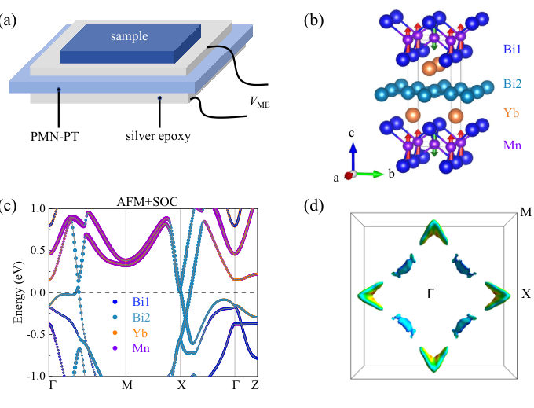
<figcaption class="paper-figure-caption"><b>Fig 1.</b> FIG. 1. (a) Schematic setup of the composite ME method used to measure the ac magnetostrictive coefficient. A sample is mechanically bonded to a PMN-PT single crystal with Ag epoxy. In a magnetic field, the magnetostrictive strain 𝜖𝑖of the sample generates a voltage 𝑉ME across the PMN-PT through the piezoelectric effect. (b) Side view of the crystal structure of YbMnBi2. Arrows on the Mn atoms indicate the magnetic moments in the C-type antiferromagnetic (AFM) structure. (c) and (d) Electronic band structure and Fermi surface of YbMnBi2 calculated with spin–orbit coupling (SOC) included in the absence of spin canting. Dirac-like bands appear near the Fermi level along the Γ– M and Γ– X...</figcaption>
</figure>
<figure class="paper-figure-card">
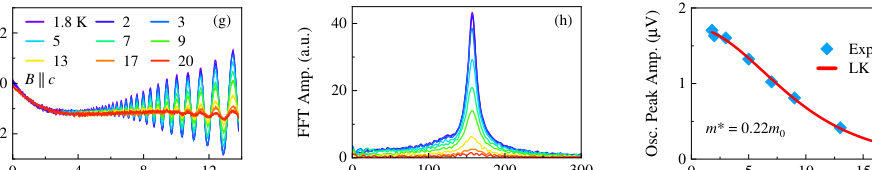
<figcaption class="paper-figure-caption"><b>Fig 2.</b> FIG. 2. Quantum oscillations in magnetization and the ac magnetostrictive coefficient for 𝐵∥𝑐. (a,d) Representative raw magnetization and ME-voltage data, with 𝑉ME ∝𝜕𝜖𝑖/𝜕𝐵. (b,e) FFT spectra of the corresponding oscillatory components. (c,f) LK fits (red lines) to the oscillatory parts plotted versus inverse field 1/𝐵. (g,h) Temperature-dependent oscillations in the ME signal and the corresponding FFT spectra. (i) Fit of the oscillation peak amplitude at a fixed magnetic field of 12.4 T using the LK thermal damping factor (red line), yielding 𝑚∗= 0.22𝑚0.</figcaption>
</figure>
<figure class="paper-figure-card">
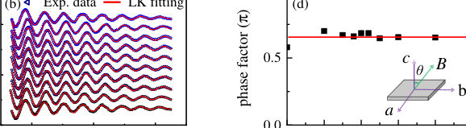
<figcaption class="paper-figure-caption"><b>Fig 3.</b> FIG. 3. Quantum oscillations in the thermopower 𝑆𝑥𝑥for magnetic fields close to the 𝑐axis. (a) 𝑆𝑥𝑥measured at selected angles. (b) The oscillator components (open triangles) of 𝑆𝑥𝑥fitted with the LK formula (red solid line). All curves in (a,b) except the one at −10◦have been vertically offset for clarity. (c,d) Angular dependence of the fitted oscillation frequency and phase, respectively. Red lines are guides to the eye. The inset in (d) illustrates the measurement geometry and the nominal angle 𝜃is defined between the magnetic field and the 𝑐axis.</figcaption>
</figure>
</div>

<p><strong>Summary.</strong> This work calibrates the phase offset for quantum oscillations measured via the ac magnetostrictive coefficient in the topological antiferromagnet $   ext{YbMnBi}_2$. By directly comparing the oscillation phases from magnetization and magnetostriction, the authors confirm a $\pi/2$ phase shift predicted by thermodynamics. This calibration is crucial for accurately extracting Berry phase information from magnetostrictive measurements.</p>
<p><strong>Why it may be interesting.</strong> While focused on condensed matter magnetism, the rigorous phase comparison technique is a powerful diagnostic tool for probing fundamental symmetries and topological properties of electronic band structures, which has parallels in understanding quantum phases in other strongly correlated systems.</p>
<details>
<summary>Detailed structure</summary>
<p><strong>Main problem.</strong> The primary goal is to experimentally calibrate the phase offset associated with quantum oscillations when measured using the ac magnetostrictive coefficient.</p>
<p><strong>Main result.</strong> The study observed a relative phase shift of approximately $\pi/2$ between the quantum oscillations in magnetization and the ac magnetostrictive coefficient, consistent with the Maxwell relation.</p>
<p><strong>Method.</strong> The authors measured quantum oscillations in both magnetization and the ac magnetostrictive coefficient on a single crystal of $    ext{YbMnBi}_2$ and compared the resulting phases.</p>
<p><strong>Model / system.</strong> The system studied is the topological antiferromagnet $ ext{YbMnBi}_2$. Its electronic structure is analyzed using DFT calculations, revealing Dirac-like bands near the Fermi level, which are sensitive to the magnetic ordering.</p>
<p><strong>Key observables.</strong> Oscillation frequencies (around 160 T), relative phase shift ($\approx \pi/2$), and the temperature dependence of oscillation amplitudes.</p>
<p><strong>Important parameters / regimes.</strong> Magnetic field up to 14 T, fundamental frequency $F \approx 160$ T, and the relative phase shift $\Delta\varphi \approx \pi/2$.</p>
<p><strong>Assumptions / limitations.</strong> The analysis relies on the validity of the Maxwell relation linking the magnetostrictive coefficient to the stress derivative of magnetization, and the use of the leading-phase approximation for theoretical derivations.</p>
<p><strong>Figures summary.</strong> Figures illustrate the composite magnetoelectric setup, the crystal structure, and the calculated electronic band structure/Fermi surface of $ ext{YbMnBi}_2$.</p>
<p><strong>Paper structure.</strong> The paper establishes the theoretical framework using the Lifshitz-Kosevich theory and Maxwell relations, details the experimental setup using the composite ME method, presents comparative measurements of oscillations in M and $\epsilon$, and concludes by using the phase comparison to calibrate the required phase offset.</p>
</details>
<details>
<summary>Abstract</summary>
<p>The Berry phase accumulated along a cyclotron orbit encodes important information about electronic band topology and is commonly inferred from the phase of quantum oscillations. Measurements of the ac magnetostrictive coefficient have recently emerged as a sensitive thermodynamic probe of quantum oscillations, but the phase offset has not been experimentally calibrated. Here, using the topological antiferromagnet YbMnBi$_2$, we calibrate this offset by directly comparing quantum oscillations in magnetization with those in the ac magnetostrictive coefficient. Measurements of both responses on the same single crystal reveal a single fundamental frequency of approximately 160 T in fields up to 14 T, enabling a direct phase comparison free from ambiguities associated with multiple frequencies. We observe an approximately $π/2$ relative phase shift between the two oscillatory responses, consistent with the Maxwell relation linking the magnetostrictive coefficient to the stress derivative of magnetization. Our results establish the appropriate phase needed to extract cyclotron-orbit phase information from quantum oscillations in the ac magnetostrictive coefficient.</p>
</details>
<p><sub><a href="#top">↑ back to top</a></sub></p>

<p><a id="paper-2608.26061"></a></p>
<h3 id="asymptotically-optimal-purification-of-noisy-unitary-channels-in-any-dimension"><a href="http://arxiv.org/abs/2608.26061v1">Asymptotically optimal purification of noisy unitary channels in any dimension</a></h3>
<p><strong>Authors:</strong> Ryotaro Niwa, Satoshi Yoshida, Mio Murao<br>
<strong>Type:</strong> theory · <strong>Category:</strong> quantum information and computing · <strong>PDF:</strong> <a href="https://arxiv.org/pdf/2608.26061v1">https://arxiv.org/pdf/2608.26061v1</a><br>
<strong>Analysis basis:</strong> full PDF text, analyzed in chunks
<strong>Topic relevance:</strong> <code>quantum measurements</code> <strong>2/5</strong></p>
<div class="figure-strip-hint">↔ Scroll figures horizontally</div>
<div class="paper-figures-scroll">
<figure class="paper-figure-card">
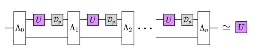
<figcaption class="paper-figure-caption"><b>Fig 1.</b> FIG. 1. A quantum superchannel Ξ implementing noisy uni- tary purification. Quantum channels Λi, (i = 0, 1, · · · n) are inserted between the noisy unitary channel NU,p to produce an approximation of a single use of U.</figcaption>
</figure>
<figure class="paper-figure-card">
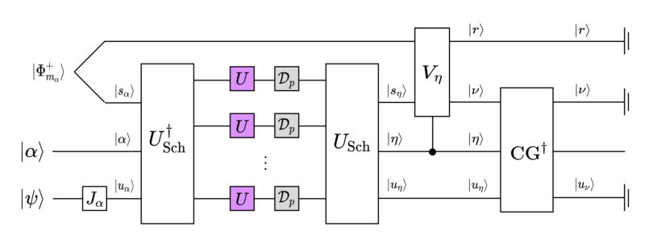
<figcaption class="paper-figure-caption"><b>Fig 2.</b> FIG. 2. In the above figure, Jα is the basis transformation implementing the isomorphism Cd ≃Uα, USch denotes the quantum Schur transform [49–51], |Φ+ mα⟩:= 1 √mα Pmα sα=1 |sα⟩Sα ⊗|sα →ˆλ⟩E is a maximally entangled state between the Specht module Sα and the environment, Vη is an isometry, and CG denotes the Clebsch-Gordan transformation. See Appendix for details.</figcaption>
</figure>
</div>

<p><strong>Summary.</strong> This theoretical paper determines the fundamental limits for purifying unknown unitary quantum channels corrupted by noise. It establishes that the optimal strategy achieves a query complexity scaling of $\Theta(d^2 p / \epsilon)$, which is an improvement over prior methods. The work rigorously proves these bounds using advanced mathematical tools from quantum information theory and representation theory.</p>
<p><strong>Why it may be interesting.</strong> The rigorous derivation of fundamental bounds and the explicit construction of optimal protocols for channel estimation and purification are central to quantum information theory, providing concrete benchmarks for quantum hardware.</p>
<details>
<summary>Detailed structure</summary>
<p><strong>Main problem.</strong> The paper addresses the fundamental limits on purifying an unknown unitary quantum channel corrupted by depolarizing noise, and analyzes the dual problem of noisy unitary conjugation.</p>
<p><strong>Main result.</strong> The optimal query complexity for purification is found to be $\Theta(d^2 p / \epsilon)$, achieving a scaling better than naive methods, and the optimal fidelity for purification matches that of conjugation in the low-noise limit.</p>
<p><strong>Method.</strong> The analysis employs advanced techniques including the Choi matrix formalism, semidefinite programming (SDP) to establish lower bounds, and constructing explicit $\mathrm{SU}(d)$-covariant parallel protocols to saturate these bounds.</p>
<p><strong>Model / system.</strong> The system involves unknown $d$-dimensional unitary channels ($U \in SU(d)$) subjected to depolarizing noise ($D_p$). The goal is to design a superchannel that reconstructs $U$ from noisy measurements.</p>
<p><strong>Key observables.</strong> Channel fidelity ($f_{	ext{Choi}}$), first-order infidelity coefficient ($C_{n,d}$), and the query complexity ($\Theta(d^2 p / \epsilon)$).</p>
<p><strong>Important parameters / regimes.</strong> Noise strength ($p$), dimension ($d$), and number of uses/queries ($n$). The analysis focuses on the low-noise ($p 	o 0$) and large-query ($n 	o \infty$) limits.</p>
<p><strong>Assumptions / limitations.</strong> The analysis relies on assuming the use of the 'twirled protocol' for universality and utilizes complex algebraic machinery involving Schur transforms and Young's orthogonal representation for deriving bounds.</p>
<p><strong>Figures summary.</strong> Figures illustrate the structure of the quantum superchannel for purification, the relationship between Young diagrams, and the Stinespring circuit diagram used in the fidelity calculation.</p>
<p><strong>Paper structure.</strong> The paper establishes the problem formulation, derives fundamental lower bounds using SDP (Theorem 1), constructs an explicit $\mathrm{SU}(d)$-covariant protocol to achieve an upper bound (Theorem 2), and then analyzes the dual problem of noisy unitary conjugation, showing the results coincide.</p>
</details>
<details>
<summary>Abstract</summary>
<p>We consider the problem of noisy unitary purification. Given access to an unknown $d$-dimensional unitary channel followed by depolarizing noise of strength $p$, we aim to construct a superchannel that universally purifies the noisy unitary back to the original unknown unitary. We optimize over arbitrary adaptive sequential strategies and analytically derive the optimal fidelity to the leading order in the noise strength and number of channel uses, while also providing a concrete $\mathrm{SU}(d)$-covariant parallel strategy that attains the optimum. Our result implies the query complexity $Θ(d^2p/ε)$ for achieving leading-order infidelity $ε$ in the low-noise regime, which scales better than the naive approach combining optimal state purification and storage-and-retrieval of quantum channels. We also consider the dual problem of noisy unitary conjugation, where the goal is to obtain the best approximation of the complex conjugate of the original unknown unitary from access to noisy queries. We show that the optimal fidelity for this task coincides with that of noisy unitary purification to the leading-order in the low-noise and large-query limit.</p>
</details>
<p><sub><a href="#top">↑ back to top</a></sub></p>

<p><a id="paper-2608.25008"></a></p>
<h3 id="kochen-specker-configurations-from-grids-on-dual-quadrics"><a href="http://arxiv.org/abs/2608.25008v1">Kochen-Specker Configurations from Grids on Dual Quadrics</a></h3>
<p><strong>Authors:</strong> Giuseppe Favacchio<br>
<strong>Type:</strong> theory · <strong>Category:</strong> other · <strong>PDF:</strong> <a href="https://arxiv.org/pdf/2608.25008v1">https://arxiv.org/pdf/2608.25008v1</a><br>
<strong>Analysis basis:</strong> full PDF text, analyzed in chunks
<strong>Topic relevance:</strong> <code>quantum measurements</code> <strong>2/5</strong></p>
<div class="figure-strip-hint">↔ Scroll figures horizontally</div>
<div class="paper-figures-scroll">
<figure class="paper-figure-card">
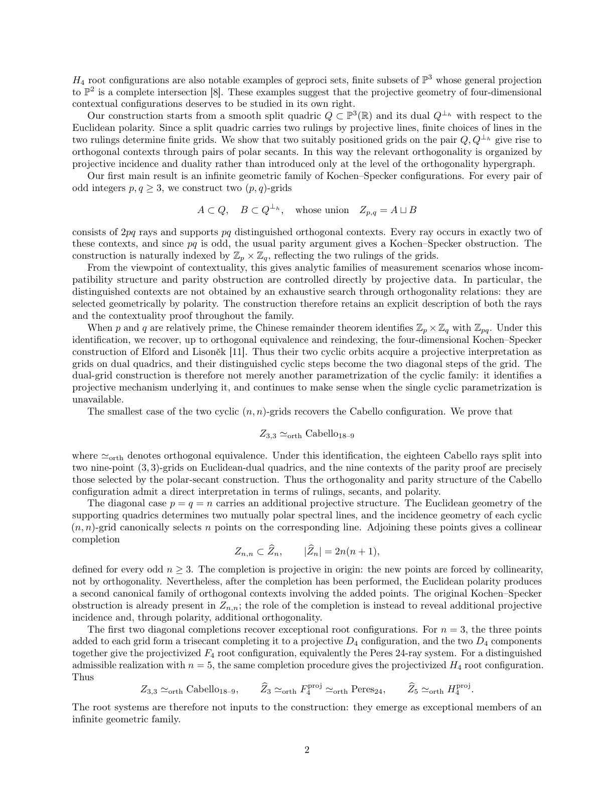
<figcaption class="paper-figure-caption"><b>Fig 1.</b> Low-resolution page preview, page 2</figcaption>
</figure>
<figure class="paper-figure-card">
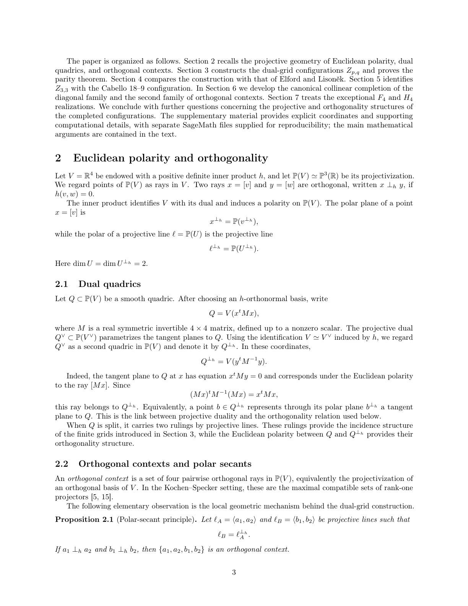
<figcaption class="paper-figure-caption"><b>Fig 2.</b> Low-resolution page preview, page 3</figcaption>
</figure>
<figure class="paper-figure-card">
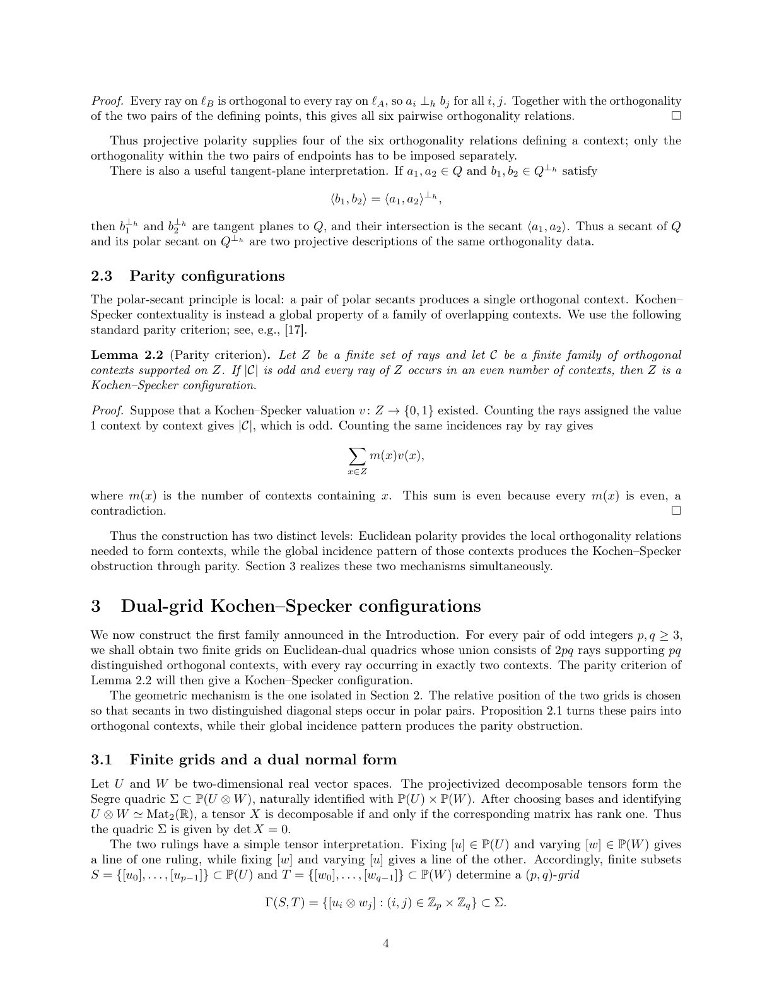
<figcaption class="paper-figure-caption"><b>Fig 3.</b> Low-resolution page preview, page 4</figcaption>
</figure>
<figure class="paper-figure-card">
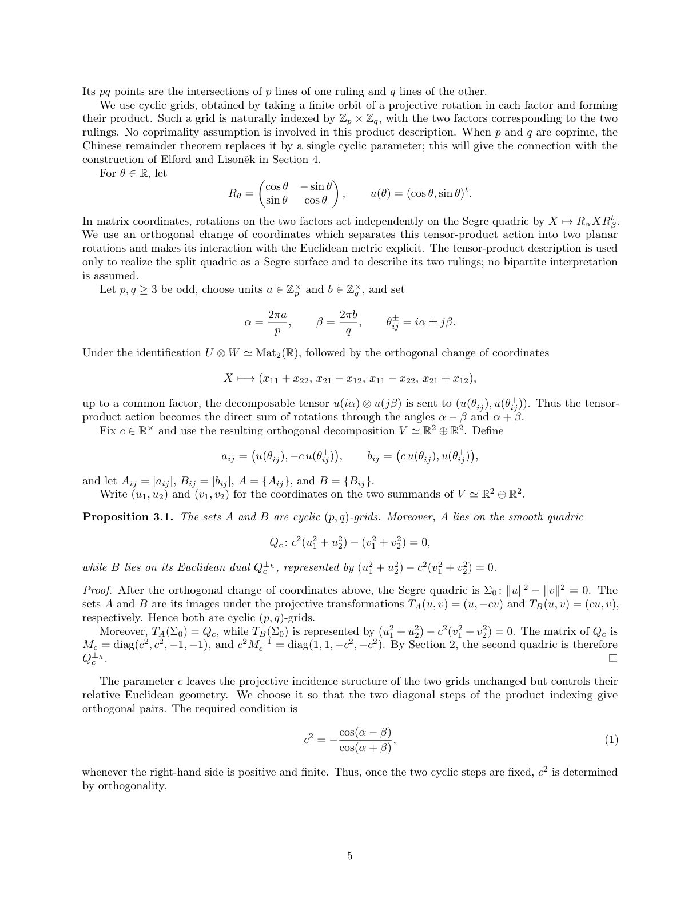
<figcaption class="paper-figure-caption"><b>Fig 4.</b> Low-resolution page preview, page 5</figcaption>
</figure>
<figure class="paper-figure-card">

<figcaption class="paper-figure-caption"><b>Fig 5.</b> Low-resolution page preview, page 6</figcaption>
</figure>
</div>

<p><strong>Summary.</strong> This paper introduces a novel, unified projective-geometric method using grids on dual quadrics to systematically construct Kochen-Specker configurations. It shows that this single mechanism can generate numerous known examples of quantum contextuality, including those related to $F_4$ and $H_4$. The work provides deep mathematical insight into the structure of quantum contextuality.</p>
<p><strong>Why it may be interesting.</strong> While highly mathematical, the core subject—quantum contextuality—is fundamental to quantum foundations and has implications for understanding measurement limitations in quantum information theory.</p>
<details>
<summary>Detailed structure</summary>
<p><strong>Main problem.</strong> The paper develops a systematic geometric framework to construct and organize Kochen-Specker (KS) configurations, which are mathematical realizations of quantum contextuality.</p>
<p><strong>Main result.</strong> It demonstrates that several prominent contextual configurations (like those related to $F_4$ and $H_4$) arise from a single, unified projective-geometric mechanism involving grids on dual quadrics in $\mathbb{P}^3(\mathbb{R})$.</p>
<p><strong>Method.</strong> The construction uses finite grids on pairs of smooth quadrics related by Euclidean polarity, employing a 'polar-secant principle' to generate orthogonal measurement contexts.</p>
<p><strong>Model / system.</strong> The model is quantum contextuality, mathematically represented by sets of rays (vectors) in a Hilbert space that must satisfy specific constraints (contextuality) regardless of the measurement context chosen.</p>
<p><strong>Key observables.</strong> Orthogonal contexts (sets of four pairwise orthogonal rays), the existence of infinite families of KS configurations, and the recovery of known exceptional root configurations ($F_4, H_4$).</p>
<p><strong>Important parameters / regimes.</strong> Odd integers $p, q \geq 3$ used to define the grid parameters $Z_{p,q}$.</p>
<p><strong>Assumptions / limitations.</strong> The construction relies on the properties of Euclidean polarity and the parity criterion for KS configurations; later sections test assumptions about complete intersections in projective space.</p>
<p><strong>Figures summary.</strong> Not specified in the notes, but the structure involves geometric constructions on quadrics and verification of algebraic relationships.</p>
<p><strong>Paper structure.</strong> The paper builds from the general geometric framework (quadrics and polarity) to construct an infinite family of configurations ($Z_{p,q}$), then analyzes specific cases (Cabello, $F_4, H_4$), and finally verifies advanced structural properties using computational algebra (e.g., checking for complete intersections).</p>
</details>
<details>
<summary>Abstract</summary>
<p>We develop a geometric framework for constructing and organizing Kochen--Specker configurations in real four-dimensional space. The construction uses finite grids on pairs of smooth quadrics related by Euclidean polarity. Their incidence geometry directly produces orthogonal measurement contexts and parity proofs of quantum contextuality, yielding infinite families of configurations and a geometric interpretation and extension of a previously known cyclic construction. For a distinguished subfamily, the same geometry admits a canonical completion determined by secant lines. The first two instances of this completion recover the exceptional root configurations of types $F_4$ and $H_4$, while the smallest case also recovers the Cabello configuration and its embedding in the Peres configuration. Thus several prominent four-dimensional contextual configurations, previously obtained from different constructions, arise from a single projective-geometric mechanism.</p>
</details>
<p><sub><a href="#top">↑ back to top</a></sub></p>

<p><a id="paper-2608.25560"></a></p>
<h3 id="math538math-core-percolation-on-hypergraphs-with-anchor-nodes"><a href="http://arxiv.org/abs/2608.25560v1">$(k,n)$-core percolation on hypergraphs with anchor nodes</a></h3>
<p><strong>Authors:</strong> Hoseung Jang, Byungjoon Min, Ginestra Bianconi<br>
<strong>Type:</strong> theory · <strong>Category:</strong> statistical mechanics · <strong>PDF:</strong> <a href="https://arxiv.org/pdf/2608.25560v1">https://arxiv.org/pdf/2608.25560v1</a><br>
<strong>Analysis basis:</strong> full PDF text, analyzed in chunks
<strong>Topic relevance:</strong> <code>analog quantum simulation</code> <strong>1/5</strong> · <code>driven-dissipative phase transition</code> <strong>1/5</strong> · <code>non-equilibrium universality</code> <strong>1/5</strong></p>
<div class="figure-strip-hint">↔ Scroll figures horizontally</div>
<div class="paper-figures-scroll">
<figure class="paper-figure-card">
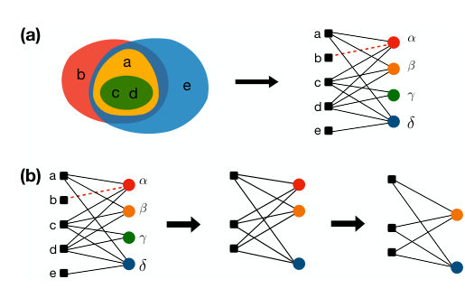
<figcaption class="paper-figure-caption"><b>Fig 1.</b> FIG. 1. (a) Schematic illustration of the mapping between a hypergraph and its corresponding factor network. (b) An example of (k, n) = (2, 3)-core first-neighbor pruning. The nodes b and e are removed because they have fewer than 2 hyperedges and the hyperedge γ is removed because it has fewer than 3 nodes. In addition, the hyperedge α is further removed due to the removed anchor node b, even though it has three active nodes.</figcaption>
</figure>
<figure class="paper-figure-card">
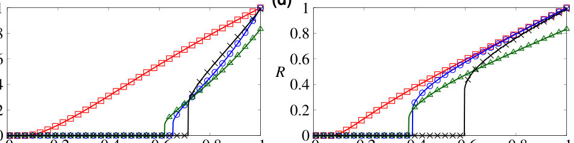
<figcaption class="paper-figure-caption"><b>Fig 2.</b> FIG. 2. The size S and R as a function of (a,b) pN with pH = 1 and (c,d) pH with pN = 1 for various core thresholds (k, n) and the anchor density θ. The numerical results (symbols) for N = 105 and the analytical predictions (lines) are shown together. All hypergraphs have Poisson degree and cardinality distributions given by Eqs. (13) and (14) with ⟨q⟩= 7.6 and ⟨m⟩= 3.8.</figcaption>
</figure>
<figure class="paper-figure-card">
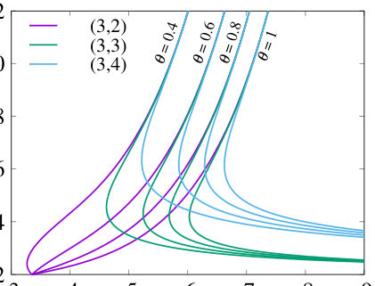
<figcaption class="paper-figure-caption"><b>Fig 3.</b> FIG. 3. Phase diagram of (k, n)-core percolation with anchor nodes on random Poisson hypergraphs in the ⟨q⟩-⟨m⟩plane. Here, pN = pH = 1. The dashed lines and the solid lines denote continuous transitions and discontinuous transitions, respectively.</figcaption>
</figure>
<figure class="paper-figure-card">
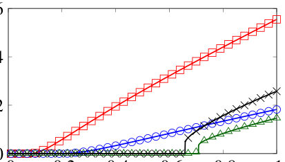
<figcaption class="paper-figure-caption"><b>Fig 4.</b> FIG. 4. (a) The size R as a function of pN for the second- neighbor node pruning with pH = 1. The dashed lines cor- respond to R of the first-neighbor pruning. (b,c) The size S and R as a function of pH for the second-neighbor hyperedge pruning with pN = 0.6. The numerical results (symbols) for N = 105 and the analytical predictions (lines) are shown to- gether for various core thresholds (k, n) and anchor density θ. All hypergraphs have Poisson degree and cardinality dis- tributions given by Eqs. (13) and (14) with ⟨q⟩= 7.6 and ⟨m⟩= 3.8.</figcaption>
</figure>
<figure class="paper-figure-card">
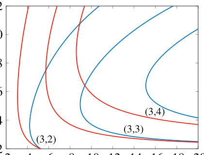
<figcaption class="paper-figure-caption"><b>Fig 5.</b> FIG. 5. Phase diagram of second-neighbor hyperedge (k, n)- core percolation with anchor nodes on random Poisson hyper- graphs in the ⟨q⟩-⟨m⟩plane. Here, pN = 0.8 and pH = 1. The dashed lines and the solid lines denote continuous transitions and discontinuous transitions, respectively.</figcaption>
</figure>
</div>

<p><strong>Summary.</strong> This paper develops a theoretical framework for analyzing percolation on hypergraphs where nodes have distinct functional roles (anchors vs. non-anchors). By deriving self-consistency equations, the authors map out the phase diagram governing the existence of a giant core, showing that node heterogeneity can fundamentally change the transition from gradual to catastrophic collapse.</p>
<p><strong>Why it may be interesting.</strong> While focused on classical network theory, the study of critical transitions, phase diagrams, and structural robustness in complex systems shares mathematical parallels with phase transitions studied in quantum many-body systems.</p>
<details>
<summary>Detailed structure</summary>
<p><strong>Main problem.</strong> To develop a comprehensive theoretical framework for $(k,n)$-core percolation models on hypergraphs that accounts for functional heterogeneity in node roles.</p>
<p><strong>Main result.</strong> The study derives self-consistency equations for first- and second-neighbor pruning processes, revealing how node heterogeneity and extended interactions affect network robustness, leading to phase diagrams with continuous and discontinuous transitions.</p>
<p><strong>Method.</strong> The authors use the cavity approach to derive self-consistency equations for the percolation process, comparing analytical predictions with numerical simulations on random hypergraphs.</p>
<p><strong>Model / system.</strong> The model is based on hypergraphs $H = (V, E)$, where nodes can be designated as 'anchor nodes' with probability $   heta$. The core structure is defined by simultaneous constraints: a node must belong to at least $k$ active hyperedges, and a hyperedge must retain at least $n$ active nodes.</p>
<p><strong>Key observables.</strong> The size of the giant $(k, n)$-core, and the nature of the phase transition (continuous vs. discontinuous).</p>
<p><strong>Important parameters / regimes.</strong> Anchor probability ($   heta$), minimum node degree ($k$), minimum hyperedge size ($n$), and the connectivity range (first-neighbor vs. second-neighbor).</p>
<p><strong>Assumptions / limitations.</strong> Nodes independently become anchor nodes with probability $   heta$. The analysis covers first-neighbor and second-neighbor pruning processes.</p>
<p><strong>Figures summary.</strong> Figures illustrate phase diagrams in the $\langle q 
angle-\langle m 
angle$ plane, showing phase boundaries separating percolating/non-percolating regimes for second-neighbor pruning.</p>
<p><strong>Paper structure.</strong> The paper introduces the model, derives self-consistency equations for first-neighbor and second-neighbor pruning, analyzes limiting cases ($  heta=0,     heta=1$), and concludes by discussing the implications of functional heterogeneity on network robustness.</p>
</details>
<details>
<summary>Abstract</summary>
<p>Hypergraphs describe higher-order interactions that involve more than a pair of nodes. A characteristic feature of hypergraphs is that their robustness can be strongly affected by the different roles of the nodes. Indeed, some nodes might be essential for a hyperedge's function, while others might not be. The loss of a single essential node completely destroys the hyperedge it belongs to, while the loss of a non-essential node has a buffering effect, inducing the hyperedge to simply reduce its size. In order to capture this phenomenology, we formulate a comprehensive theoretical framework for $(k,n)$-core percolation models on hypergraphs, where each node of a hyperedge is an anchor with probability $θ$, and a hyperedge fails if an anchor node fails. Hypergraph $(k,n)$-core percolation problems can be classified as first-neighbor and second-neighbor problems, indicating that in the pruning process the connectivity is ensured only by the state of the first neighbors or the second neighbors, respectively. We derive self-consistency equations for first-neighbor and second-neighbor (node- and hyperedge-based) pruning processes, and obtain the size of the giant $(k,n)$-core. We obtain the phase diagram, including continuous and discontinuous transitions, and confirm our theory on random hypergraphs using numerical simulations. The results show how the heterogeneity of the nodes' functional roles and the extended range of the interactions affect the robustness of higher-order networks.</p>
</details>
<p><sub><a href="#top">↑ back to top</a></sub></p>

<p><a id="paper-2608.26104"></a></p>
<h3 id="multicomponent-magnetic-domain-walls-in-rhombohedral-graphene"><a href="http://arxiv.org/abs/2608.26104v1">Multicomponent Magnetic Domain Walls in Rhombohedral Graphene</a></h3>
<p><strong>Authors:</strong> Mainak Das, Nemin Wei, Chunli Huang<br>
<strong>Type:</strong> theory · <strong>Category:</strong> strongly correlated electrons · <strong>PDF:</strong> <a href="https://arxiv.org/pdf/2608.26104v1">https://arxiv.org/pdf/2608.26104v1</a><br>
<strong>Analysis basis:</strong> full PDF text, analyzed in chunks
<strong>Topic relevance:</strong> <code>Keldysh / 2PI / non-Gaussian methods</code> <strong>1/5</strong> · <code>analog quantum simulation</code> <strong>1/5</strong> · <code>quantum measurements</code> <strong>1/5</strong></p>
<div class="figure-strip-hint">↔ Scroll figures horizontally</div>
<div class="paper-figures-scroll">
<figure class="paper-figure-card">
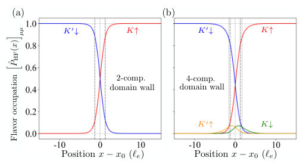
<figcaption class="paper-figure-caption"><b>Fig 1.</b> Figure 1. Two- and four-component domain walls in the valley- imbalanced quarter metal, determined by the competition between spin-orbit coupling 𝜆soc and intervalley Hund’s coupling 𝑔⊥|𝑛𝑒|. In (a), 𝜆soc ≫𝑔⊥|𝑛𝑒| the magnetic texture only has two flavors, whereas in (b), 𝜆soc ≪𝑔⊥|𝑛𝑒| allows all four flavors to participate inside the wall. The curves show the diagonal component of the local spin- valley order parameter [ ˆ𝑃HF(𝑥)]𝜇𝜇.</figcaption>
</figure>
<figure class="paper-figure-card">
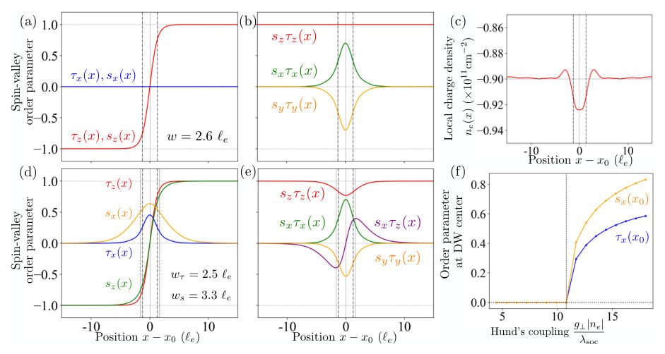
<figcaption class="paper-figure-caption"><b>Fig 2.</b> Figure 2. Self-consistent HF solutions of the two-component and the four-component spin–valley domain walls. (a–c) Results for the two- component domain wall at 𝑔⊥= 0 centered at 𝑥= 𝑥0. (a,b) Local Spin–valley texture shows that the spin and valley polarizations reverse simultaneously while remaining locked throughout the domain wall, giving rise to 𝑠𝑧𝜏𝑧(𝑥) = 1 throughout the space. The characteristic length scale is the average hole spacing, ℓ𝑒= 1/ √︁</figcaption>
</figure>
<figure class="paper-figure-card">
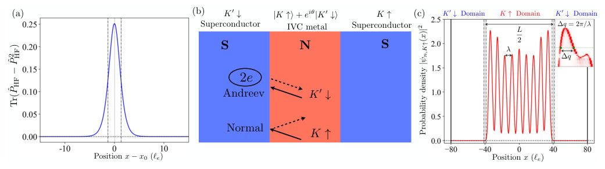
<figcaption class="paper-figure-caption"><b>Fig 3.</b> Figure 3. (a) Deviation of the microscopic HF spin–valley projector from the pure-state condition, quantified by Tr( ˆ𝑃HF −ˆ𝑃2 HF). A finite value near the domain-wall center demonstrates that the local spin–valley density matrix is mixed, in contrast to the pure projector assumed in the 𝐶𝑃3 theory. (b) Schematic of spin–valley-selective scattering across an 𝑆|𝑁|𝑆junction, where time-reversal-related chiral superconductors are separated by an intervalley-coherent(IVC) normal-metal, ∝|𝐾↑⟩+ 𝑒𝑖𝜃|𝐾′ ↓⟩. The IVC region coherently mixes the two valley flavors, enabling normal reflection and intervalley-assisted Andreev conversion. (c) Probability density |𝜓𝑛,𝐾↑(𝑥)|2 of a representative Bloch...</figcaption>
</figure>
</div>

<p><strong>Summary.</strong> This theoretical work explores novel magnetic domain walls in rhombohedral graphene, which possess both spin and valley degrees of freedom. By modeling the system using Hartree-Fock theory, the authors identify two distinct wall types whose existence depends on the competition between Hund coupling and SOC. Crucially, they show that the dynamics of these textures can couple to superconducting transport, suggesting potential signatures for quantum electronic devices.</p>
<p><strong>Why it may be interesting.</strong> The coupling of magnetic texture dynamics to superconducting transport (generating a voltage) provides a mechanism for reading out complex quantum states using superconducting junctions, which is highly relevant for quantum device physics.</p>
<details>
<summary>Detailed structure</summary>
<p><strong>Main problem.</strong> The study investigates the emergence of qualitatively new spatial magnetic textures, specifically domain walls, in rhombohedral graphene due to the interplay of spin and valley degrees of freedom.</p>
<p><strong>Main result.</strong> The research uncovers two distinct classes of domain walls—a two-component and an intrinsically multicomponent (four-component) wall—whose existence is controlled by the competition between intervalley Hund's coupling and spin-orbit coupling.</p>
<p><strong>Method.</strong> The study employs a microscopic approach using the self-consistent Hartree–Fock (HF) Hamiltonian, supplemented by continuum $CP^3$ theory for analysis.</p>
<p><strong>Model / system.</strong> The physical system is rhombohedral multilayer graphene, analyzed in the valley-imbalanced quarter-metal phase. The model incorporates spin-valley-momentum (SWMc) band structure, intrinsic SOC, and Hund's exchange interactions.</p>
<p><strong>Key observables.</strong> Local charge density, spin-valley order parameters ($\langle s_i \omega_j 
angle$), and the superconducting phase difference coupling to the texture's internal phase.</p>
<p><strong>Important parameters / regimes.</strong> The ratio between intervalley Hund's coupling ($g_{\perp}|n_e|$) and spin-orbit coupling ($\lambda_{soc}$), which dictates the transition between the two wall types.</p>
<p><strong>Assumptions / limitations.</strong> The analysis relies on the HF approximation and, when using continuum theory, assumes a uniform local carrier density and a rank-one projector for the order parameter.</p>
<p><strong>Figures summary.</strong> Figures illustrate the spatial profiles of order parameters for both two-component and four-component walls, demonstrating the continuous development of transverse spin and valley coherence above a critical coupling ratio.</p>
<p><strong>Paper structure.</strong> The paper progresses from establishing the physical problem in rhombohedral graphene, detailing the microscopic HF calculations, characterizing the two distinct domain wall regimes based on coupling strengths, and finally exploring the coupling of these textures to superconducting transport.</p>
</details>
<details>
<summary>Abstract</summary>
<p>Spatial textures of magnetic order, such as domain walls and skyrmions, are fundamental objects in magnetism. In rhombohedral multilayer graphene, magnetic order involves spin and valley degrees of freedom, opening the possibility of qualitatively new spatial textures. Here, we explore this possibility through a microscopic study of a one-dimensional domain wall in the valley-imbalanced quarter-metal phase of rhombohedral graphene. We uncover two different classes of domain walls. One resembles a conventional magnetic domain wall, locally rotating between the two bulk states, whereas the other is intrinsically multicomponent and explores states that are not occupied in either bulk domain. Which texture is realized is controlled by the competition between intervalley Hund's coupling and spin-orbit coupling, and we identify experimental signatures to distinguish them. We further show that, in a superconducting junction formed across the wall, the superconducting phase difference couples directly to the intervalley-coherent phase of the texture. Precession of this internal phase can therefore generate a voltage across the junction. Our theory shows that rhombohedral graphene indeed has magnetic textures beyond conventional magnet and that their dynamics can couple to superconducting transport.</p>
</details>
<p><sub><a href="#top">↑ back to top</a></sub></p>

<p><a id="paper-2608.26078"></a></p>
<h3 id="parity-anomaly-as-modular-commutator-with-massless-dirac-fermion"><a href="http://arxiv.org/abs/2608.26078v1">Parity Anomaly as Modular Commutator with Massless Dirac Fermion</a></h3>
<p><strong>Authors:</strong> Meng Zeng<br>
<strong>Type:</strong> theory · <strong>Category:</strong> other · <strong>PDF:</strong> <a href="https://arxiv.org/pdf/2608.26078v1">https://arxiv.org/pdf/2608.26078v1</a><br>
<strong>Analysis basis:</strong> full PDF text, analyzed in chunks
<strong>Topic relevance:</strong> <code>analog quantum simulation</code> <strong>1/5</strong> · <code>quantum measurements</code> <strong>1/5</strong></p>
<div class="figure-strip-hint">↔ Scroll figures horizontally</div>
<div class="paper-figures-scroll">
<figure class="paper-figure-card">
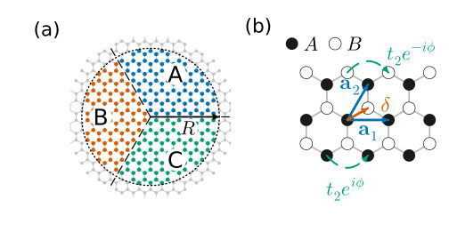
<figcaption class="paper-figure-caption"><b>Fig 1.</b> FIG. 1: Setup. (a) Tripartition used in this work: three 120◦regions A, B, C of a disk with radius R, meeting at a plaquette center. (b) Conventions on the Haldane hon- eycomb model: the two sublattices, the Bravais vectors a1 = (1, 0) and a2 = (1, √</figcaption>
</figure>
<figure class="paper-figure-card">
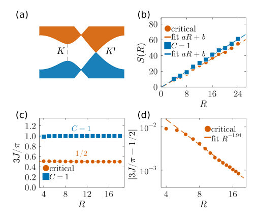
<figcaption class="paper-figure-caption"><b>Fig 2.</b> FIG. 2: Transition between the C = 0 and C = 1 phases. M = −0.6 is used for the gapped case. (a) Schematic spectrum at the transition, with one gapless node and one gapped node. (b) Entanglement entropy of a disk of radius R. Both states follow the area law. (c) MC for the tripartition of Fig. 1(a). The gapped state returns the Chern number, whereas the critical point converges to 0.5. (d) Correction of MC decays as power law in system size.</figcaption>
</figure>
<figure class="paper-figure-card">

<figcaption class="paper-figure-caption"><b>Fig 3.</b> Fig. 2(c) plots the measured MC in different cases. The non-trivial gapped case simply gives the Chern number, which in this case is just the CCC c−, agreeing with</figcaption>
</figure>
<figure class="paper-figure-card">
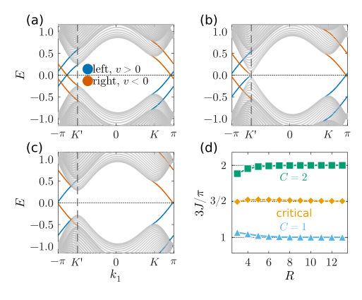
<figcaption class="paper-figure-caption"><b>Fig 4.</b> FIG. 3: Chiral edge mode coexisting with a bulk Dirac node, Eq. (7), at tc = 0.3 and M1 = 0. (a)-(c) Cylin- der spectra (periodic along a1). Grey marks bulk states; colored points are edge modes (the higher the color inten- sity, the more localized to the edge) , blue for left-moving (v &gt; 0) and orange for right-moving (v &lt; 0). The dashed line is the projection of K′. (a) C = 2: two pairs of co- propagating chiral edge modes. (b) At M2 = M c 2 the bulk closes, where one pair of edge modes delocalize into the bulk and the other pair remains robust. (c) C = 1: one pair of edge modes. (d) 3J/π versus R for the three cases in (a)-(c): converges to 2, 3/2, and 1, respectively.</figcaption>
</figure>
<figure class="paper-figure-card">
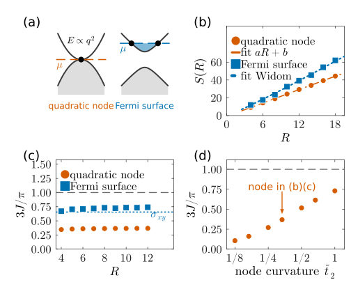
<figcaption class="paper-figure-caption"><b>Fig 5.</b> FIG. 4: (a) Schematic figures for quadratic node (left) and finite Fermi surface with µ = 0.75 (right). (b) En- tanglement scaling: Quadratic node still satisfies the area law, whereas the FS follows the Widom scaling [19]. (c) The MC: both cases seem to converge in the thermody- namic limit, but we note that the quadratic node case dif- fers significantly from 1 = (C+ + C−)/2, and the FS case differs from the Berry curvature σxy (dotted line) [39]. (d) Curvature dependence of the MC for a quadratic node.</figcaption>
</figure>
</div>

<p><strong>Summary.</strong> This work extends the concept of the modular commutator, originally used to measure the chiral central charge in gapped topological phases, to gapless systems. The key finding is that at a Dirac node, the commutator yields a robust half-quantized value, which the authors interpret as the entanglement signature of the parity anomaly. This provides a novel, information-theoretic measurement tool for topological properties.</p>
<p><strong>Why it may be interesting.</strong> The connection drawn between entanglement measures (modular commutator) and fundamental topological invariants (parity anomaly, Chern number) provides a powerful, information-theoretic tool for characterizing topological phases, which is highly relevant to modern condensed matter theory.</p>
<details>
<summary>Detailed structure</summary>
<p><strong>Main problem.</strong> The paper investigates what the modular commutator measures when the 2D bulk state transitions from a gapped phase to a gapless phase, generalizing its utility beyond gapped systems.</p>
<p><strong>Main result.</strong> For a single Dirac node, the modular commutator exhibits a robust half-quantized value, which is proposed to be the entanglement manifestation of the parity anomaly. This quantization is lost in other types of gaplessness like Fermi surfaces.</p>
<p><strong>Method.</strong> The analysis uses the modular commutator $J(A,B,C)$ formalism, comparing its behavior in gapped versus gapless regimes, and employing symmetry arguments and correlation function analysis.</p>
<p><strong>Model / system.</strong> The primary model is the free-fermion Haldane honeycomb model, studied at its critical point hosting an isolated Dirac node. The analysis also considers systems with chiral edge modes and compares results to quadratic nodes and Fermi surfaces.</p>
<p><strong>Key observables.</strong> Modular Commutator ($J$), Chiral Central Charge ($c^-$), Half-quantized value (1/2), Hall conductance ($\sigma_{xy}$), and Conditional Mutual Information ($   ext{CMI}$).</p>
<p><strong>Important parameters / regimes.</strong> Dirac velocity, Dirac cone anisotropy, system size (for finite-size corrections), and energy cutoff ($\Lambda$).</p>
<p><strong>Assumptions / limitations.</strong> The analysis relies on the free-fermion approximation and assumes that the half-quantization is robust against tripartition deformation for the Dirac node case.</p>
<p><strong>Figures summary.</strong> Figures illustrate the setup using the Haldane model, showing the MC converging to 0.5 at the critical point, and comparing entanglement scaling for different gapless systems.</p>
<p><strong>Paper structure.</strong> The paper progresses from the gapped case where $J$ measures $c^-$, to the gapless Dirac node case where $J$ is half-quantized, and finally generalizes the analysis by comparing this behavior to other gapless scenarios and relating it to the parity anomaly.</p>
</details>
<details>
<summary>Abstract</summary>
<p>The modular commutator $J(A,B,C) = i\langle[K_{AB},K_{BC}]\rangle$ extracts the chiral central charge $c_-$ from a single bulk wavefunction of a \emph{gapped} 2d state, where $3J/π=c_-$. Inspired by the recent developments in the field of gapless symmetry-protected topological phases, we ask: what does the modular commutator measure, if it is well-defined at all, when the 2d bulk becomes \textit{gapless}? Several interesting new insights can already be obtained using the simple Haldane honeycomb model. For the critical point hosting an isolated Dirac node we find that $J$ remains sharp: it converges to a \textit{half-quantized} value, with corrections that decay as a power law in the subsystem size rather than exponentially, mirroring the power-law correlations in gapless systems. We prove the half-quantization using an emergent reflection symmetry of the massless Dirac cone, and show that the half-quantized contribution comes from the other gapped cone (the massive partner of the massless one). This massive partner can be interpreted as the physical incarnation of the Pauli-Villars regulator, which is the origin of the parity-breaking level-$\frac{1}{2}$ Chern-Simons term (with half-quantized Hall conductance) and the parity anomaly. When protected chiral edge modes coexist with a bulk Dirac node we obtain $3J/π= c_-+\frac{1}{2}$. The half-quantization is also shown to be robust against tripartition deformation, tuning Dirac velocity and Dirac cone anisotropy. We further investigate other types of gaplessness---quadratic nodes (in contrast to linear Dirac) and the case with Fermi surface---and show that the robust half-quantization of $J$ is lost in such non-Dirac cases. These results generalize the modular commutator beyond gapped phases, and at the same time provide an information-theoretic measurement of the parity anomaly.</p>
</details>
<p><sub><a href="#top">↑ back to top</a></sub></p>

<p><a id="paper-2608.25870"></a></p>
<h3 id="surpassing-gaussian-optimality-in-multiparameter-estimation-with-indefinite-causal-order"><a href="http://arxiv.org/abs/2608.25870v1">Surpassing Gaussian optimality in multiparameter estimation with indefinite causal order</a></h3>
<p><strong>Authors:</strong> Sudipta Das, Rivu Gupta, Aditi Sen De, Himadri Shekhar Dhar<br>
<strong>Type:</strong> theory · <strong>Category:</strong> other · <strong>PDF:</strong> <a href="https://arxiv.org/pdf/2608.25870v1">https://arxiv.org/pdf/2608.25870v1</a><br>
<strong>Analysis basis:</strong> full PDF text, analyzed in chunks
<strong>Topic relevance:</strong> <code>quantum measurements</code> <strong>1/5</strong> · <code>quantum optics experiment</code> <strong>1/5</strong></p>
<div class="figure-strip-hint">↔ Scroll figures horizontally</div>
<div class="paper-figures-scroll">
<figure class="paper-figure-card">
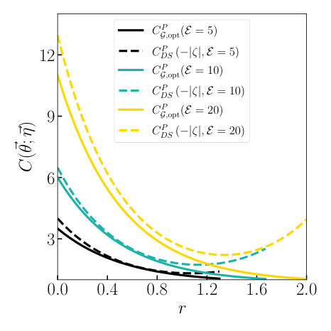
<figcaption class="paper-figure-caption"><b>Fig 1.</b> FIG. 1: SLD-CRB for single-mode pure Gaussian states em- ployed in multiparameter estimation. The SLD-CRB, C(⃗θ;⃗η) (ordinate), is shown against the encoding squeezing strength, r (abscissa), for the optimal Gaussian probe state, CP G,opt (solid line), and the displaced-squeezed state with momen- tum squeezing, CDS(−ζ) (dashed line). We consider probes of different energy, E P = 5 (dark black), E P = 10 (light blue), and E P = 20 (very light yellow). The displaced- squeezed probe parameters for the different energies are given as {βx = 0.1, βp = 2}E P=5, {βx = 0.2, βp = 3}E P=10, and {βx = 0.3, βp = 4}E P=20, where in each case, the momentum-squeezing strength is calculated according to ζ =...</figcaption>
</figure>
<figure class="paper-figure-card">
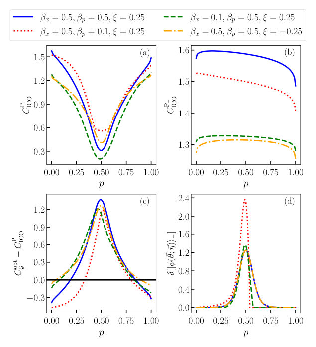
<figcaption class="paper-figure-caption"><b>Fig 2.</b> FIG. 2: SLD-CRB for probes prepared through ICO. (a) CP− ICO (ordinate) is shown against the ICO parameter, p (abscissa), for</figcaption>
</figure>
<figure class="paper-figure-card">
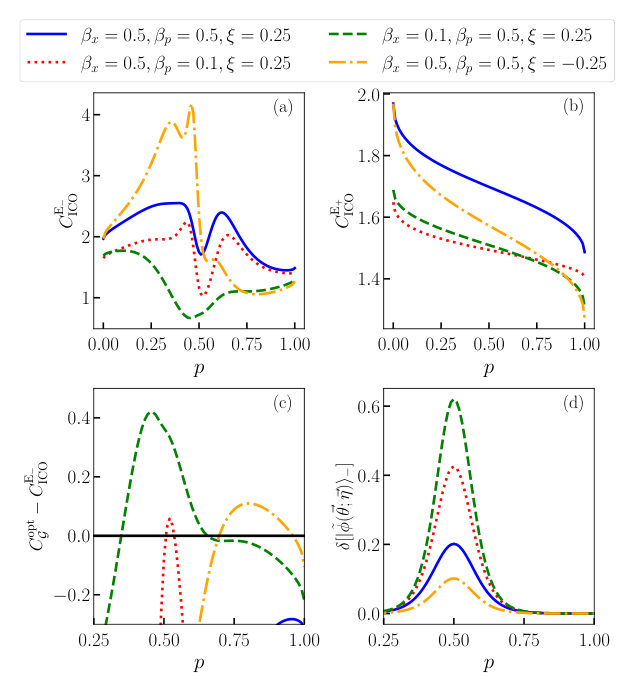
<figcaption class="paper-figure-caption"><b>Fig 3.</b> FIG. 3: SLD-CRB for displaced-squeezed probes after ICO encoding. (a) The SLD-CRB for the displaced-squeezed probe when considering the odd superposition of ICO encoding, CE− ICO (ordinate), is shown against the ICO parameter, p (abscissa).</figcaption>
</figure>
</div>

<p><strong>Summary.</strong> This work investigates enhancing quantum parameter estimation in continuous-variable systems by analyzing optimal probe states for estimating displacement and squeezing. The authors demonstrate that while Gaussian probes are optimal under standard assumptions, incorporating indefinite causal order (ICO) allows for surpassing the Gaussian precision limit. This highlights ICO as a novel, independent resource for quantum metrology.</p>
<p><strong>Why it may be interesting.</strong> It directly tackles fundamental limits in quantum sensing, showing how non-standard resources like ICO can enhance metrological performance beyond what is achievable with simple Gaussian states.</p>
<details>
<summary>Detailed structure</summary>
<p><strong>Main problem.</strong> The paper aims to improve the precision of simultaneous multiparameter estimation (displacement and squeezing) in continuous-variable quantum systems beyond the standard Gaussian optimality limits.</p>
<p><strong>Main result.</strong> Introducing indefinite causal order (ICO) in the protocol can surpass the Gaussian precision bound, and this advantage is shown to be independent of non-Gaussianity.</p>
<p><strong>Method.</strong> The analysis uses quantum metrology frameworks, calculating bounds via the Quantum Fisher Information Matrix (QFIM) and comparing the standard SLD-CRB against the Holevo-Cramér-Rao bound (HCRB).</p>
<p><strong>Model / system.</strong> The system involves single-mode Gaussian probes generated by displacement and squeezing operations on the vacuum state, analyzed in the context of continuous-variable quantum systems.</p>
<p><strong>Key observables.</strong> Estimation precision (quantified by the CRB) for displacement ($\alpha$) and squeezing ($r$) parameters.</p>
<p><strong>Important parameters / regimes.</strong> Probe energy ($E_P$), squeezing strength ($\zeta$), and the parameters defining the unknown transformations ($\alpha, r$).</p>
<p><strong>Assumptions / limitations.</strong> The analysis compares the SLD-CRB to the HCRB, and the optimal Gaussian probe state is found to be agnostic to the operation ordering.</p>
<p><strong>Figures summary.</strong> Figure 1 compares the SLD-CRB versus encoding squeezing strength ($r$) for different probe energies, showing the optimal Gaussian bound ($C_{G,opt}$) and the displaced-squeezed bound ($C_{DS}$).</p>
<p><strong>Paper structure.</strong> The paper analyzes Gaussian probe optimality first, followed by dedicated sections studying the introduction of ICO in probe preparation and ICO in parameter encoding.</p>
</details>
<details>
<summary>Abstract</summary>
<p>We identify single-mode Gaussian probes, generated by displacement and squeezing operations on the vacuum state, which are optimal for the simultaneous estimation of displacement and squeezing operations in continuous-variable quantum systems. Importantly, our results reveal that the best precision at a fixed energy is achieved not by an experimentally costly squeezing resource, but rather by redirecting some of the energy towards displacement, thus allowing for more resource-effective operations. Furthermore, introducing indefinite causal order (ICO) in either the probe preparation or parameter encoding step can surpass the Gaussian precision bound, even though the optimal Gaussian probe state is agnostic to the ordering of the operations. Specifically, we observe that odd-parity superpositions of the two definite orders can enhance precision over optimal Gaussian probes in specific parameter regimes. Further, the observed advantage cannot be attributed solely to non-Gaussianity, as quantified by the relative entropy of non-Gaussianity, highlighting ICO as an independent resource for enhancing multiparameter estimation.</p>
</details>
<p><sub><a href="#top">↑ back to top</a></sub></p>

<p><a id="paper-2608.25915"></a></p>
<h3 id="computing-key-rates-for-one-sided-device-independent-quantum-key-distribution"><a href="http://arxiv.org/abs/2608.25915v1">Computing key rates for one-sided device-independent quantum key distribution</a></h3>
<p><strong>Authors:</strong> Andreas Bluhm, Gereon Koßmann, Martin Sandfuchs, René Schwonnek, Giuseppe Viola, Ramona Wolf<br>
<strong>Type:</strong> theory · <strong>Category:</strong> quantum information and computing · <strong>PDF:</strong> <a href="https://arxiv.org/pdf/2608.25915v1">https://arxiv.org/pdf/2608.25915v1</a><br>
<strong>Analysis basis:</strong> full PDF text, analyzed in chunks
<strong>Topic relevance:</strong> <code>quantum measurements</code> <strong>1/5</strong></p>
<div class="figure-strip-hint">↔ Scroll figures horizontally</div>
<div class="paper-figures-scroll">
<figure class="paper-figure-card">
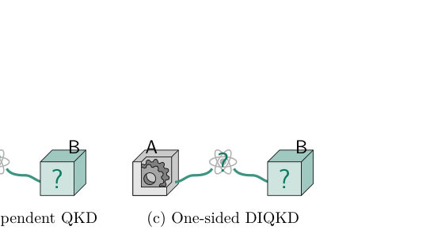
<figcaption class="paper-figure-caption"><b>Fig 1.</b> Figure 1: Different levels of device characterisation in QKD protocols. Device-dependent QKD (a) assumes fully characterised measurement devices for both parties A and B, whereas DIQKD (b) requires no assumptions about the devices and relies only on observed correlations. One-sided DIQKD (c) represents an intermediate scenario, where one measurement device is characterised while the other is treated as a black box.</figcaption>
</figure>
<figure class="paper-figure-card">
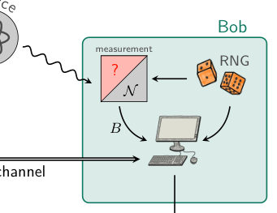
<figcaption class="paper-figure-caption"><b>Fig 2.</b> Figure 2: Setup for one-sided DIQKD. An untrusted source distributes a quantum state to Alice and Bob, who perform local measurements and exchange classical information I. One measurement device is treated as a black box, indicated by the question mark, while the other is fully characterised, denoted by M or N for Alice or Bob, respectively. Throughout this work, Alice generates the raw key S. The choice of which party’s measurement device is characterised is part of the protocol specification.</figcaption>
</figure>
<figure class="paper-figure-card">
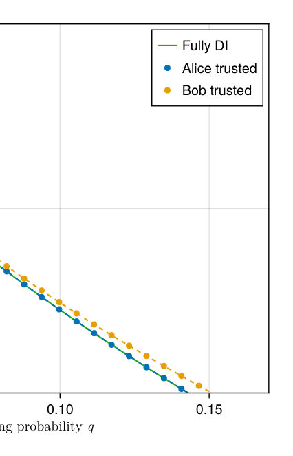
<figcaption class="paper-figure-caption"><b>Fig 3.</b> Figure 3: Plot of the asymptotic key rate as a function of the depolarizing probability q. Shown are the cases when Bob is trusted (and Alice is not), the case when Alice is trusted (and Bob is not), and when neither party is trusted (fully device-independent). In all cases, the key is extracted from Alice’s measurement results.</figcaption>
</figure>
<figure class="paper-figure-card">
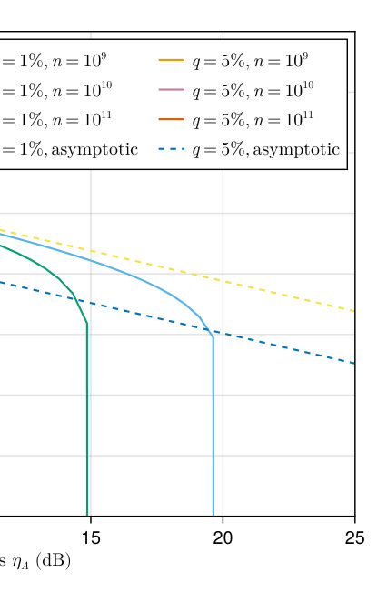
<figcaption class="paper-figure-caption"><b>Fig 4.</b> Figure 4: Key rates for the one-sided device-independent BB84 protocol with trusted Alice as a function of Alice’s detection efficiency ηA for different values of the depolarizing probability q and the number of rounds n. Bob’s detection efficiency is fixed at ηB = 0.8 and he assigns non-detection events to the outcome b = 0. The testing probability is fixed at γ = 0.1. The soundness parameter is set to εsnd = 10−12 and the completeness parameter is set to εcomp = 0.01.</figcaption>
</figure>
<figure class="paper-figure-card">
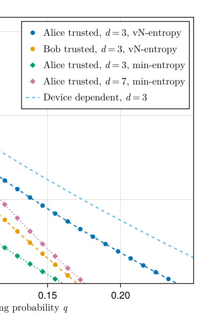
<figcaption class="paper-figure-caption"><b>Fig 5.</b> Figure 5: Key rates for the one-sided DIQKD protocol based on d + 1 mutually unbiased bases in d-dimensional Hilbert spaces. We compare bounds derived via the von Neumann entropy with bounds based on the min-entropy. The former are calculated using our method based on the KS objective function and the NPA-MP hierarchy, whereas for the latter we used the SDP relaxation of the min- entropy from [MGG+26]. We observe that even in dimension d = 3, the von Neumann entropy provides better noise tolerance than the min-entropy at d = 7.</figcaption>
</figure>
</div>

<p><strong>Summary.</strong> This work provides a comprehensive mathematical toolbox for calculating key rates in one-sided device-independent Quantum Key Distribution (DIQKD). By extending the NPA hierarchy and using advanced algebraic techniques, the authors solve the key rate problem as a complex optimization over C*-algebras. The results highlight that the security performance is critically dependent on the asymmetric placement of trust between the two communicating parties.</p>
<p><strong>Why it may be interesting.</strong> The rigorous mathematical framework developed—linking key rate computation to C*-algebraic optimization—provides powerful, general tools applicable to analyzing security in various quantum communication protocols beyond simple qubit systems.</p>
<details>
<summary>Detailed structure</summary>
<p><strong>Main problem.</strong> The paper focuses on developing general tools and methods to calculate the achievable secret key rates for one-sided device-independent quantum key distribution (DIQKD).</p>
<p><strong>Main result.</strong> The key rate calculation is shown to be highly dependent on which party's device is characterized, demonstrating no universal ordering for optimal trust placement.</p>
<p><strong>Method.</strong> The authors develop extensions of the NPA hierarchy and utilize the Generalized Entropy Accumulation Theorem (GEAT) to formulate the key rate problem as a non-commutative polynomial optimization over C*-algebras.</p>
<p><strong>Model / system.</strong> The model is the one-sided DIQKD setting, characterized by an asymmetric trust model where one party's device is fully characterized while the other is treated as a black box.</p>
<p><strong>Key observables.</strong> Achievable secret key rate ($r_\infty$), conditional von Neumann entropy ($H(S|IQE)_
ho - H(S|IB)_
ho$).</p>
<p><strong>Important parameters / regimes.</strong> The choice of which party (Alice or Bob) is characterized; the size of the key ($n$) for finite-size bounds.</p>
<p><strong>Assumptions / limitations.</strong> The public information ($I$) must not depend on the memory of the untrusted device; the analysis relies on advanced algebraic structures like C*-algebras and the NPA hierarchy extensions.</p>
<p><strong>Figures summary.</strong> Figure 1 illustrates different levels of device characterization in QKD (Device-dependent, DIQKD, One-sided DIQKD). Figure 2 shows the setup for one-sided DIQKD, distinguishing between the characterized and black-boxed measurement devices.</p>
<p><strong>Paper structure.</strong> The paper progresses from defining the one-sided DIQKD setting and the key rate optimization problem (using entropy bounds) to developing advanced mathematical tools. These tools involve extending the NPA hierarchy and establishing rigorous algebraic isomorphisms between the measurement constraints and tensor products of algebras.</p>
</details>
<details>
<summary>Abstract</summary>
<p>The defining feature of one-sided device-independent quantum key distribution is its asymmetric trust model in which only one party is characterized. This scenario sets an interesting middle ground between high key rates achievable by characterizing devices and the security of full device-independence. Here, we provide new tools, methods, and benchmarks for calculating key rates in this setting. To achieve this, we develop and compare two extensions of the NPA hierarchy and derive finite-size security bounds against general attacks with arbitrary device memory. The latter is based on the Generalized Entropy Accumulation Theorem. We then investigate the performance of various protocols: the BB84 protocol both with and without losses, a qutrit mutually unbiased bases protocol, and protocols based on Bell inequalties such as CHSH and $I_{3322}$. We find that the choice of which party is characterized can strongly affects the key rate, surprisingly without a universal ordering. Our work thus offers a general toolbox for calculating key rates for one-sided device-independent QKD protocols.</p>
</details>
<p><sub><a href="#top">↑ back to top</a></sub></p>

<p><a id="paper-2608.25103"></a></p>
<h3 id="convergence-of-the-conformal-ward-identity-in-the-derivative-expansion-approximation"><a href="http://arxiv.org/abs/2608.25103v1">Convergence of the conformal Ward identity in the derivative expansion approximation</a></h3>
<p><strong>Authors:</strong> Jorge Ibañez, Matthieu Tissier, Gonzalo De Polsi<br>
<strong>Type:</strong> theory · <strong>Category:</strong> statistical mechanics · <strong>PDF:</strong> <a href="https://arxiv.org/pdf/2608.25103v1">https://arxiv.org/pdf/2608.25103v1</a><br>
<strong>Analysis basis:</strong> full PDF text, analyzed in chunks
<strong>Topic relevance:</strong> <code>Keldysh / 2PI / non-Gaussian methods</code> <strong>1/5</strong></p>
<div class="figure-strip-hint">↔ Scroll figures horizontally</div>
<div class="paper-figures-scroll">
<figure class="paper-figure-card">
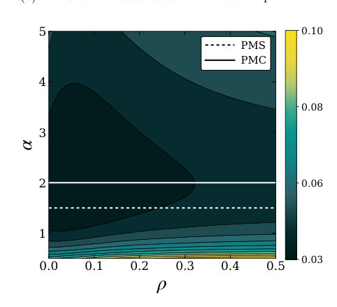
<figcaption class="paper-figure-caption"><b>Fig 1.</b> FIG. 1. Function |f (1,1) 1,∂2 (ρ, α)| corresponding to perturbations associated to critical exponents ν and ω using the exponential regulator given in (6) at order O(∂2) of the DE. Horizontal lines correspond to αPMS (dashed) and αPMC (continuous).</figcaption>
</figure>
<figure class="paper-figure-card">
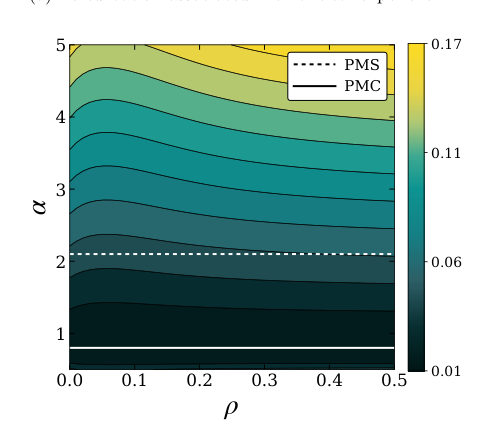
<figcaption class="paper-figure-caption"><b>Fig 2.</b> FIG. 2. Function |f (1,1) 1,∂4 (ρ, α)| corresponding to perturbations associated to critical exponents ν and ω using the exponential regulator given in (6) at order O(∂4) of the DE. Horizontal lines correspond to αPMS (dashed) and αPMC (continuous) whenever available.</figcaption>
</figure>
<figure class="paper-figure-card">
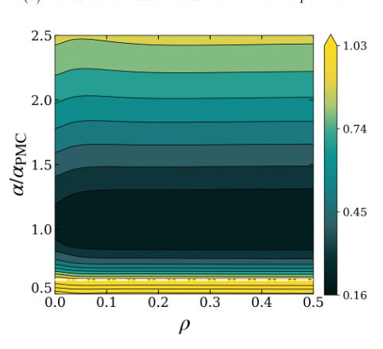
<figcaption class="paper-figure-caption"><b>Fig 3.</b> FIG. 3. Function g(ρ, ¯α) corresponding to perturbations as- sociated with the critical exponents ν and ω, using the expo- nential regulator given in (6). White dot-dashed lines indicate the values of ¯α = α/αPMC for which ∥g(·, ¯α)∥= 1.</figcaption>
</figure>
<figure class="paper-figure-card">
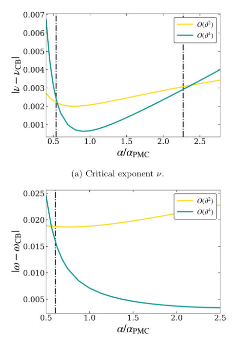
<figcaption class="paper-figure-caption"><b>Fig 4.</b> FIG. 4. Deviations of the critical exponents ν and ω from the reference values νCB and ωCB, respectively, obtained from the conformal bootstrap [12], as functions of α/αPMC, at orders O(∂2) (yellow) and O(∂4) (blue), using the exponential regu- lator given in (6). Black dot-dashed lines mark the values of α/αPMC for which ∥g(·, α)∥= 1.</figcaption>
</figure>
<figure class="paper-figure-card">
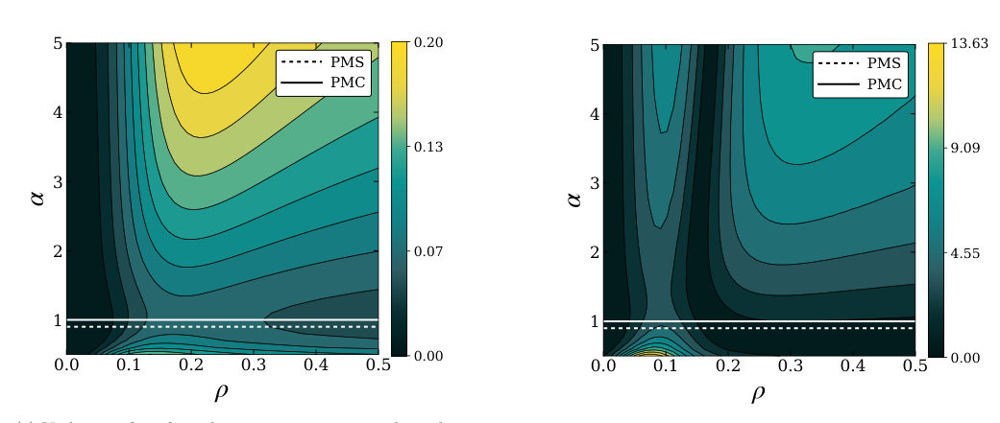
<figcaption class="paper-figure-caption"><b>Fig 5.</b> FIG. 5. Remaining conformal constraints study of function |f (n,1) i,∂4 (ρ, α)| for the operator associated with critical exponent ν using the exponential regulator, Eq. (6).</figcaption>
</figure>
</div>

<p><strong>Summary.</strong> This theoretical work examines how well the conformal symmetry is preserved when using the derivative expansion approximation within the Functional Renormalization Group for critical systems like the 3-d Ising model. By systematically increasing the order of the approximation up to $O(\partial^4)$, the authors demonstrate that the violation of conformal constraints decreases, strongly suggesting the convergence of the approximation scheme.</p>
<p><strong>Why it may be interesting.</strong> While focused on critical phenomena, the rigorous study of symmetry restoration and approximation convergence techniques (like PMS/PMC) is highly relevant to understanding effective field theories in complex quantum systems.</p>
<details>
<summary>Detailed structure</summary>
<p><strong>Main problem.</strong> The paper investigates the convergence of the conformal Ward identity when using the derivative expansion approximation within the functional renormalization group framework.</p>
<p><strong>Main result.</strong> The analysis shows that increasing the order of the derivative expansion systematically reduces the breaking of conformal invariance, providing evidence for the convergence of this approximation scheme.</p>
<p><strong>Method.</strong> The study employs the Functional Renormalization Group (FRG) coupled with a Derivative Expansion (DE) approximation, analyzing constraints derived from conformal Ward identities at orders up to $O(\partial^4)$.</p>
<p><strong>Model / system.</strong> The focus is on the 3-d Ising universality class, modeled via $\phi^4$ theory near its critical point, where conformal invariance is expected.</p>
<p><strong>Key observables.</strong> Universal critical exponents ($
u, \omega$), the degree of conformal symmetry breaking, and the function $g(
ho, ar{\alpha})$ measuring constraint improvement.</p>
<p><strong>Important parameters / regimes.</strong> The regulator parameter $\alpha$, the order of the derivative expansion (up to $O(\partial^4)$), and the scale-dependent cutoff $k$.</p>
<p><strong>Assumptions / limitations.</strong> The primary assumption is that the DE is a systematically improvable approximation, and the analysis relies on specific regulator choices (e.g., exponential or Wetterich regulators).</p>
<p><strong>Figures summary.</strong> Figures illustrate the improvement of constraints ($g(
ho, ar{\alpha})$) and the reduction of symmetry violations as higher orders of the derivative expansion are included, comparing results to conformal bootstrap values.</p>
<p><strong>Paper structure.</strong> The paper builds by first establishing the FRG framework and the DE ansatz, then analyzing the conformal constraints at increasing orders, culminating in quantitative comparisons showing the convergence trend.</p>
</details>
<details>
<summary>Abstract</summary>
<p>Conformal invariance is expected to be an emergent property of many systems in their critical regime. However, approximation schemes generically spoil this property. This is in particular the case of the derivative expansion, a widely used approximation scheme in the framework of the functional renormalization group. In this article, we consider Ward identities associated with conformal invariance in the 3-d Ising universality class with truncations at order 4 (next-to-next-to-leading order) in the derivative expansion, with $Z_2$ invariant composite operators. Our results confirm that the regulating functions which yield a small breaking of conformal invariance also present a small sensitivity of the universal critical exponents with the choice of this regulating function. We also show that, in the vicinity of regulator-parameter values for which the conformal constraints are best satisfied, the breaking of conformal invariance reduces as the order of the derivative expansion is increased, providing a new indication of the convergence of this approximation scheme.</p>
</details>
<p><sub><a href="#top">↑ back to top</a></sub></p>

<p><a id="paper-2608.25541"></a></p>
<h3 id="defect-states-in-three-dimensional-diamond-photonic-band-gap-crystals"><a href="http://arxiv.org/abs/2608.25541v1">Defect states in three-dimensional diamond photonic band gap crystals</a></h3>
<p><strong>Authors:</strong> Julia Rocha, Bart A. van Tiggelen, Ad Lagendijk, Willem L. Vos, Sergey E. Skipetrov<br>
<strong>Type:</strong> theory · <strong>Category:</strong> disordered systems and neural networks · <strong>PDF:</strong> <a href="https://arxiv.org/pdf/2608.25541v1">https://arxiv.org/pdf/2608.25541v1</a><br>
<strong>Analysis basis:</strong> full PDF text, analyzed in chunks
<strong>Topic relevance:</strong> <code>analog quantum simulation</code> <strong>1/5</strong></p>
<div class="figure-strip-hint">↔ Scroll figures horizontally</div>
<div class="paper-figures-scroll">
<figure class="paper-figure-card">
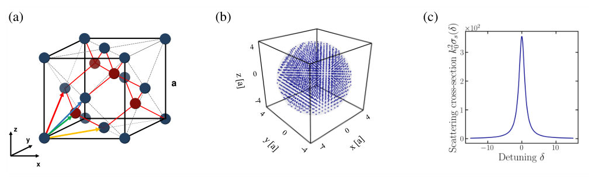
<figcaption class="paper-figure-caption"><b>Fig 1.</b> Figure 1. (a) Cubic unit cell of the diamond crystal structure. Scatterers occupying sites A and B are shown as blue and red spheres, respectively, and their connecting vector d = (a/4, a/4, a/4) is shown in green. The primitive lattice vectors, a1 = (0, a/2, a/2), a2 = (a/2, 0, a/2) and a3 = (a/2, a/2, 0) are shown as red, yellow, and blue arrows, respectively. (b) A crystal of finite size k0R = 15 and lattice spacing k0a = 3.4, made of N = 2869 scatterers. (c) Dimensionless scattering cross-section of a resonant scatterer with polarizability α(ω) defined by Eq. (8).</figcaption>
</figure>
<figure class="paper-figure-card">
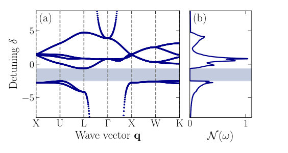
<figcaption class="paper-figure-caption"><b>Fig 2.</b> Figure 2. (a) Band diagram and (b) normalized DOS for light in a diamond crystal consisting of point scatterers with a lattice constant k0a = 3.4. The band diagram is computed along the standard irreducible path X–U–L–Γ–X–W–K in the first Brillouin zone of the underlying fcc crystal. The DOS is obtained by uniformly sampling 106 q vectors throughout the first Brillouin zone. The shaded region indicates the complete photonic band gap.</figcaption>
</figure>
<figure class="paper-figure-card">
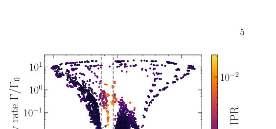
<figcaption class="paper-figure-caption"><b>Fig 3.</b> Fig. 4(b) Fig. 4(a) 10−3</figcaption>
</figure>
<figure class="paper-figure-card">
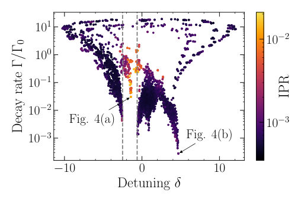
<figcaption class="paper-figure-caption"><b>Fig 4.</b> Figure 3. Distribution of resonances in the complex plane for a diamond crystal of lattice spacing k0a = 3.4 and radius k0R = 15. Each eigenvalue is colored according to the IPR of the corresponding eigenvector, showing the degree of its spatial localization. Vertical dashed lines indicate the band edges of the infinite crystal.</figcaption>
</figure>
<figure class="paper-figure-card">
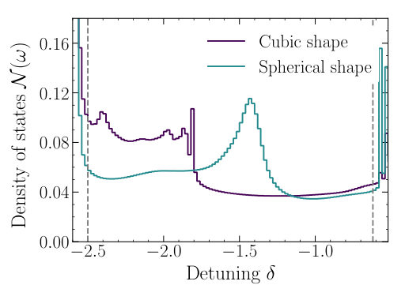
<figcaption class="paper-figure-caption"><b>Fig 5.</b> Figure 5. DOS of a diamond photonic crystal of finite size and lattice constant k0a = 3.4, for two different sample shapes. Spherical (cubic) sample has radius k0R = 15 (edge length k0L = 24) and contains N = 2869 (N = 3059) scatterers.</figcaption>
</figure>
</div>

<p><strong>Summary.</strong> This paper theoretically examines defect states in 3D photonic band gap crystals, showing that defects create localized modes within the gap. The study rigorously compares finite-size effects with the infinite-crystal limit using Green's function techniques. It is significant for understanding how engineered disorder can lead to highly confined, long-lived photonic resonances.</p>
<p><strong>Why it may be interesting.</strong> This work provides a detailed theoretical framework for understanding how engineered disorder (defects) can create robust, long-lived quantum states (photonic band gap modes) whose properties are governed by localization physics, analogous to Anderson localization in electronic systems.</p>
<details>
<summary>Detailed structure</summary>
<p><strong>Main problem.</strong> The study investigates the existence, properties, and localization of defect states within the photonic band gap of three-dimensional diamond crystals.</p>
<p><strong>Main result.</strong> Defects introduce localized states inside the photonic band gap whose lifetimes increase exponentially with crystal size, while the theory also addresses the possibility of Anderson localization in the infinite limit.</p>
<p><strong>Method.</strong> The analysis uses theoretical methods involving the Green's function formalism, solving eigenvalue problems for both finite and infinite crystal sizes, and employing the coupled-dipole method for lifetime calculations.</p>
<p><strong>Model / system.</strong> The system is a diamond crystal modeled with point scatterers, governed by the Maxwell-Helmholtz equation. The theory analyzes the impact of substitutional defects on the photonic band structure.</p>
<p><strong>Key observables.</strong> Defect eigenfrequencies, state lifetimes ($\Gamma$), and the Inverse Participation Ratio (IPR) quantifying spatial localization.</p>
<p><strong>Important parameters / regimes.</strong> Crystal size (finite vs. infinite limit), frequency detuning ($\delta$), and the on-site Green's function of the ideal crystal.</p>
<p><strong>Assumptions / limitations.</strong> Initial analyses often rely on the single-scattering approximation, and the theory compares results from the infinite-crystal limit with finite-size numerical simulations.</p>
<p><strong>Figures summary.</strong> Figures illustrate the cubic unit cell structure, finite crystal sizes, the photonic band gap structure (DOS), and spatial profiles of representative localized states.</p>
<p><strong>Paper structure.</strong> The paper progresses from defining the governing equations and the role of the Green's function in the ideal crystal, to analyzing the resonance conditions for defects, comparing finite-size effects via the coupled-dipole method, and finally extending the theory to multiple scattering and Anderson localization.</p>
</details>
<details>
<summary>Abstract</summary>
<p>We perform a theoretical study of defect states within the photonic band gap of three-dimensional diamond crystals composed of point scatterers and doped with substitutional defects. The defects introduce localized states inside the photonic band gap, whose existence conditions and eigenfrequencies are expressed in terms of the on-site Green's function of the ideal defect-free crystal. Off-site Green's functions are also calculated as function of distance and are shown to vanish within approximately two unit cells. Finite-size effects are analyzed by comparing the results obtained in the infinite-crystal limit with numerical simulations based on the coupled-dipole method. The latter not only reproduce the eigenfrequencies of the defect states within the band gap, but also provide their lifetimes originating from the finite crystal size. The lifetimes of the defect states increase exponentially with crystal size, becoming very long for large crystals. In addition to defect states in the three-dimensional photonic band gap, the defects also give rise to strongly detuned states outside the gap, which decouple from the spectrum of the ideal defect-free crystal.</p>
</details>
<p><sub><a href="#top">↑ back to top</a></sub></p>

<p><a id="paper-2608.25797"></a></p>
<h3 id="fault-tolerant-math594math-state-preparation-and-injection-for-more-efficient-fine-grained-quantum-circuit-synthesis"><a href="http://arxiv.org/abs/2608.25797v1">Fault-tolerant $|\sqrt{ \mathrm{T} }\rangle$ state preparation and injection for more efficient fine-grained quantum circuit synthesis</a></h3>
<p><strong>Authors:</strong> Berat Yenilen, Markus Müller, Manuel Rispler<br>
<strong>Type:</strong> theory · <strong>Category:</strong> quantum information and computing · <strong>PDF:</strong> <a href="https://arxiv.org/pdf/2608.25797v1">https://arxiv.org/pdf/2608.25797v1</a><br>
<strong>Analysis basis:</strong> full PDF text, analyzed in chunks
<strong>Topic relevance:</strong> <code>quantum measurements</code> <strong>1/5</strong></p>
<div class="figure-strip-hint">↔ Scroll figures horizontally</div>
<div class="paper-figures-scroll">
<figure class="paper-figure-card">
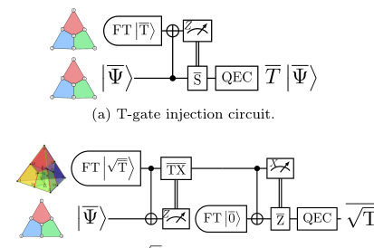
<figcaption class="paper-figure-caption"><b>Fig 1.</b> FIG. 1. Magic-state injection circuits for encoded qubits. The injected magic states are prepared fault-tolerantly: the | √</figcaption>
</figure>
<figure class="paper-figure-card">
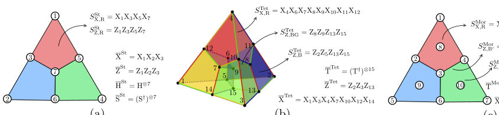
<figcaption class="paper-figure-caption"><b>Fig 2.</b> FIG. 2. Representative quantum error-correcting codes used in this work. (a) The Steane [[7, 1, 3]] color code with face stabilizers SSt X,c and SSt Z,c for c ∈{R, G, B} and transversal logical Clifford gates. (b) The tetrahedral [[15, 1, 3]] color code with cell X-stabilizers STet X,c (c ∈{R, G, B, Y}) and face Z-stabilizers STet Z,f ; it admits a transversal logical T gate. (c) The morphed [[10, 1, 2]] error-detecting code with pyramid-type 5-qubit X-stabilizers and face-type Z-stabilizers; it supports a fault-tolerant logical T implementation.</figcaption>
</figure>
<figure class="paper-figure-card">

<figcaption class="paper-figure-caption"><b>Fig 3.</b> FIG. 3. The one-way transversal logical CX gate between the tetrahedral and Steane codes follows Ref. [30].</figcaption>
</figure>
<figure class="paper-figure-card">
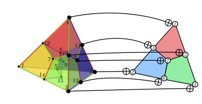
<figcaption class="paper-figure-caption"><b>Fig 4.</b> Fig. 3 [30]. The gate is implemented transversally by ap- plying physical CX gates between the Steane code and a suitable seven-qubit subset of the tetrahedral code. It is one-way because this construction realizes a logical CX only for a fixed control-target qubit orientation. In that orientation, the relevant stabilizers and logical Pauli op- erators propagate as required for a logical CX, preserving fault tolerance through transversality [30].</figcaption>
</figure>
<figure class="paper-figure-card">
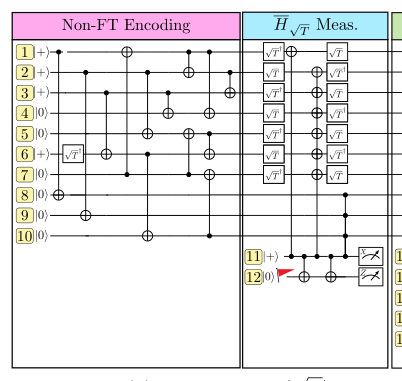
<figcaption class="paper-figure-caption"><b>Fig 5.</b> FIG. 4. Quantum circuits for preparing the | √</figcaption>
</figure>
</div>

<p><strong>Summary.</strong> This paper develops fault-tolerant protocols to prepare the $|\sqrt{T}
angle$ magic state using advanced QEC codes like the tetrahedral code. By incorporating this new gate primitive, the authors demonstrate a significant (20-30%) reduction in the required resources for synthesizing complex quantum circuits compared to using only the standard Clifford+T gate set.</p>
<p><strong>Why it may be interesting.</strong> While focused on abstract quantum computation, the rigorous analysis of noise coefficients and resource scaling is highly relevant to understanding the practical limitations and scaling of any physical quantum hardware platform (like trapped ions or superconducting qubits).</p>
<details>
<summary>Detailed structure</summary>
<p><strong>Main problem.</strong> The paper aims to improve the efficiency of fine-grained quantum circuit synthesis by expanding the available set of fault-tolerant non-Clifford gates beyond the standard Clifford+T set.</p>
<p><strong>Main result.</strong> Access to the $\sqrt{T}$ primitive reduces the average space-time cost for synthesizing Haar-random single-qubit unitaries by approximately 20%–30% compared to the standard Clifford+T gate set.</p>
<p><strong>Method.</strong> The authors introduce flag fault-tolerant protocols for preparing the logical $|\sqrt{T}
angle$ state on specific Quantum Error Correction (QEC) codes and simulate the resulting circuits under noise.</p>
<p><strong>Model / system.</strong> The work uses quantum computation models based on CSS stabilizer codes, specifically the 3D tetrahedral color code and its morphed variant, to implement fault-tolerant logical operations.</p>
<p><strong>Key observables.</strong> Logical error rates (LERs), acceptance probabilities, and the space-time cost for synthesizing single-qubit unitaries.</p>
<p><strong>Important parameters / regimes.</strong> The physical error rate ($p$), the QEC code distance ($d=2t+1$), and the comparison between Clifford+T and Clifford+T + $\sqrt{T}$ gate sets.</p>
<p><strong>Assumptions / limitations.</strong> The analysis assumes that the $\sqrt{T}$ primitive can be prepared fault-tolerantly using the specified codes, and it models noise using circuit-level depolarizing channels.</p>
<p><strong>Figures summary.</strong> Figures illustrate magic-state injection circuits for $|T
angle$ and $|\sqrt{T}
angle$ states, and show representative codes like the Steane, Tetrahedral, and Morphed codes.</p>
<p><strong>Paper structure.</strong> The paper details the protocols for preparing $|\sqrt{T}
angle$ states on various codes, simulates these protocols under noise, and quantifies the resulting reduction in computational overhead compared to existing gate sets.</p>
</details>
<details>
<summary>Abstract</summary>
<p>Magic-state injection is a standard route to realize universal fault-tolerant quantum computation. Whereas the set of Clifford gates in combination with the non-Clifford T gate is a widely used universal gate set, extending the available set of non-Clifford primitives can reduce compilation overhead, provided that the additional primitives can be prepared fault-tolerantly with competitive resource costs and at sufficiently low logical noise rates. In this work, we introduce flag fault-tolerant protocols for preparing logical $|\sqrt{\mathrm{T}} \rangle $ magic states on the 3D tetrahedral color code and its smaller morphed variant. Our simulations under circuit-level noise verify fault tolerance, quantify acceptance and logical error rates, and we reconstruct the effective logical channels of the corresponding circuits for gate injection via logical process tomography. We find that access to $\sqrt{\mathrm{T}}$ reduces the average space-time cost of synthesizing Haar-random single-qubit unitaries by approximately $20$-$30$% relative to the Clifford+T gate set across practically relevant approximation regimes. These results demonstrate how expanding the set of fault-tolerant non-Clifford primitives can improve computational efficiency and broaden the design space for universal quantum computation in the early fault-tolerant era.</p>
</details>
<p><sub><a href="#top">↑ back to top</a></sub></p>

<p><a id="paper-2608.25563"></a></p>
<h3 id="gnss-free-quantum-gravity-aided-navigation-and-fine-scale-marine-surveying-with-a-strapdown-quantum-gravimeter"><a href="http://arxiv.org/abs/2608.25563v1">GNSS-free quantum gravity-aided navigation and fine-scale marine surveying with a strapdown quantum gravimeter</a></h3>
<p><strong>Authors:</strong> Patrick J. Everitt, Donald H. White, Todd Lyon, Murat Muradoglu, Alessandro D'Ortenzio, Aaron J. Canciani, Malo Cadoret, Daniel D. Brown, David Adams, Yosri Ben-Aïcha, Suraj Bijjahalli, Mojtaba K. Farsani, Alexander Rischka, Karandeep S. Gill, Magdalena Meyer, Henry W. Orton, Nicholas P. Robins, Reuben Symon, Michael J. Biercuk, Michael R. Hush, Stuart S. Szigeti, Russell P. Anderson<br>
<strong>Type:</strong> experiment · <strong>Category:</strong> other · <strong>PDF:</strong> <a href="https://arxiv.org/pdf/2608.25563v1">https://arxiv.org/pdf/2608.25563v1</a><br>
<strong>Analysis basis:</strong> full PDF text, analyzed in chunks
<strong>Topic relevance:</strong> <code>quantum measurements</code> <strong>1/5</strong></p>
<div class="figure-strip-hint">↔ Scroll figures horizontally</div>
<div class="paper-figures-scroll">
<figure class="paper-figure-card">
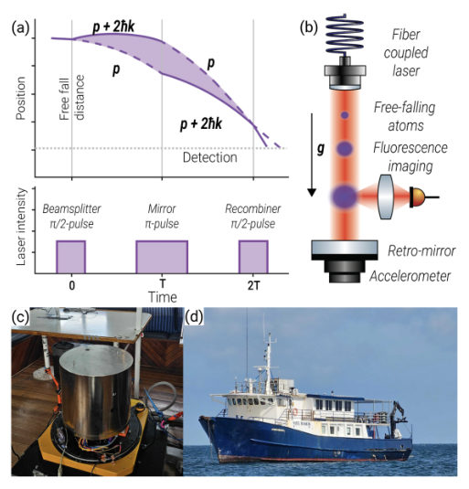
<figcaption class="paper-figure-caption"><b>Fig 1.</b> FIG. 1. Marine trial with a quantum gravimeter. (a), Space–time diagram of the free-falling Mach–Zehnder atom- interferometer sequence used during the trial. Three square laser pulses split, redirect and recombine the 87Rb matter waves by imparting the atoms with differing momenta p aug- mented by the quantum of momentum carried by the laser light ℏk; the lower panel shows the corresponding laser- intensity sequence used to perform an acceleration-sensitive interferometer over a total time of 2T s. The shaded area between the effective interferometer arms represents the en- closed interferometer phase imparted due to differential im- pact of gravity on atoms with different momenta along the...</figcaption>
</figure>
<figure class="paper-figure-card">
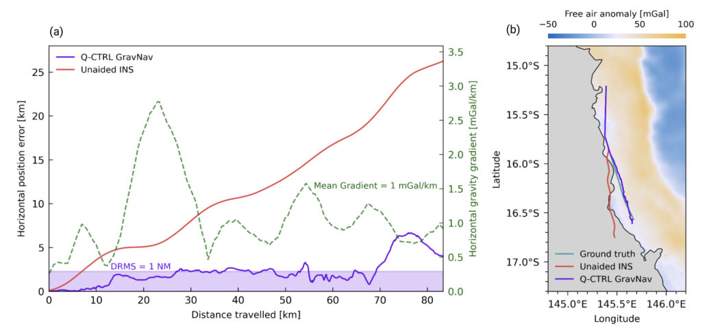
<figcaption class="paper-figure-caption"><b>Fig 2.</b> FIG. 2. Demonstration of gravity-aided navigation using a quantum gravimeter. (a), Pointwise horizontal position error versus distance traveled for Q-CTRL GravNav (purple) and the unaided inertial navigation system (INS; red). Both solutions exclude GNSS observations during the evaluated segment; GNSS is used only as the post-processed reference against which error is calculated. The dashed green trace, on the right axis, is the magnitude of the horizontal gradient of the grav SWOT 04 map evaluated along the withheld ground-truth trajectory and is diagnostic only. The purple band marks horizontal errors below one nautical mile (1.852 km); it is a distance reference rather than a reported...</figcaption>
</figure>
<figure class="paper-figure-card">
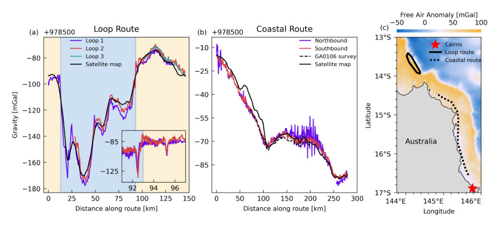
<figcaption class="paper-figure-caption"><b>Fig 3.</b> FIG. 3. Comparison of quantum-gravity measurements with satellite and ship-survey gravity. (a), Gravity measured during three traversals of the 145 km loop route in (c). A Bessel low-pass filter with a 300 s time constant is applied, and gravity predicted by grav SWOT 04 is shown in black [8–10]. The inset expands the 92–96 km region using a 60 s filter. Kilometer zero is (13.5725◦S, 144.0567◦E), and distance is measured clockwise from this point. Blue shading from 13 to 93 km denotes open water outside the Great Barrier Reef; yellow shading denotes water within the reef. Loops 1 and 2 are clockwise and Loop 3 anticlockwise. Mean vessel speed is 8.4 knots. (b), Gravity measured on...</figcaption>
</figure>
<figure class="paper-figure-card">
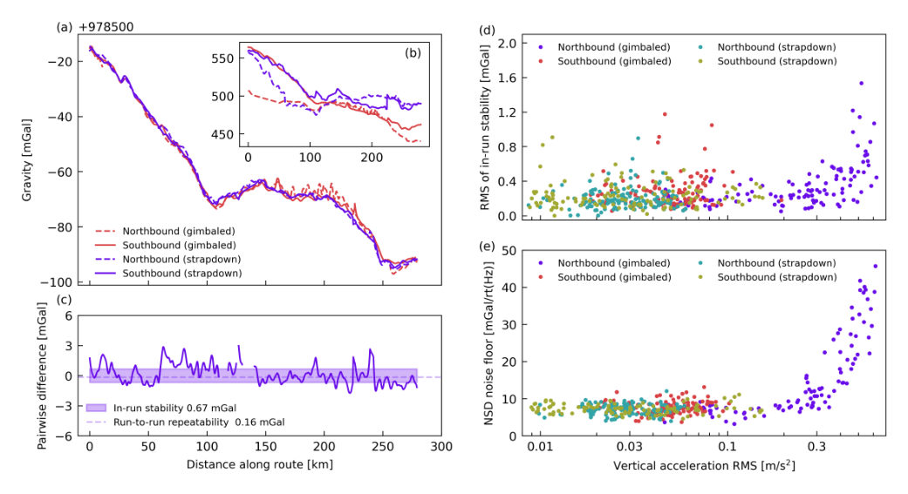
<figcaption class="paper-figure-caption"><b>Fig 4.</b> FIG. 4. Comparison of gravimeter performance in gimbaled and strapdown configurations. (a), Gravity measured along the 280 km coastal route during northbound and southbound traversals with the quantum gravimeter operated in gimbaled and strapdown configurations. (b), Gravity estimates along the same 280 km coastal route from the same gravimetric pipeline without hybrid quantum-classical stabilization applied, relying exclusively on classical sensors (see Methods). (c), Effective pairwise residual between the repeated gravity profiles as a function of distance. The shaded band denotes the route-wide residual RMS of 0.67 mGal and the dashed line the run-to-run repeatability of 0.16 mGal. (d),...</figcaption>
</figure>
<figure class="paper-figure-card">
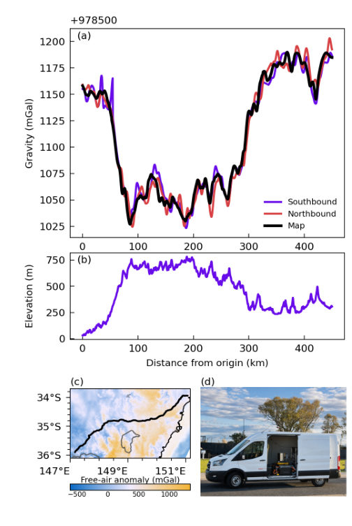
<figcaption class="paper-figure-caption"><b>Fig 5.</b> FIG. 5. Road gravimetry survey along the Hume Highway in New South Wales. The quantum gravimeter was mounted on a gimbal inside a van and driven along the highway at an average speed of 100 km h−1. (a) Northbound (red) and southbound (purple) gravity profiles are compared with the gravity trace extracted from an airborne-survey map (black). Kilometer zero is the north-eastern endpoint in south-west Sydney; distance increases towards Mullengandra in southern New South Wales. (b) WGS84 elevation along the journey acquired by GNSS. (c) The route from Sydney to Mullengan- dra is plotted on the free-air anomaly map from the airborne gravimetry survey [46]. (d) The gravimeter mounted on the...</figcaption>
</figure>
</div>

<p><strong>Summary.</strong> This paper reports the first demonstration of quantum-gravity-aided navigation that is entirely independent of GNSS signals. By integrating a quantum gravimeter with an INS, the system successfully corrected navigation drift over long maritime paths and performed high-resolution gravity surveys. This proves the viability of compact, autonomous quantum sensing for critical applications in denied or remote environments.</p>
<p><strong>Why it may be interesting.</strong> While the core technology is applied geodesy/navigation, the reliance on quantum sensing (atomic interferometry) for highly stable, drift-free measurements makes it relevant to quantum sensing applications in dynamic environments.</p>
<details>
<summary>Detailed structure</summary>
<p><strong>Main problem.</strong> The primary challenge addressed is maintaining accurate navigation and performing fine-scale surveying at sea when Global Navigation Satellite Systems (GNSS) are unavailable or unreliable, and unaided Inertial Navigation Systems (INS) suffer from drift.</p>
<p><strong>Main result.</strong> The system successfully demonstrated bounded positioning accuracy at the nautical-mile level during GNSS-free navigation and achieved mGal-level agreement with gravity maps during surveying, resolving anomalies 50 times finer than the reference map.</p>
<p><strong>Method.</strong> The authors employed gravity map matching, using a quantum gravimeter to constrain the drift of a navigation-grade INS by referencing local gravity measurements to a satellite-derived anomaly map.</p>
<p><strong>Model / system.</strong> The physical system is a hybrid sensor package installed on a surface vessel, combining a quantum gravimeter (atomic sensor), a classical accelerometer, and a navigation-grade IMU. The system was tested in both gimbaled and strapdown configurations.</p>
<p><strong>Key observables.</strong> Position error (DRMS at nautical-mile level), gravity anomaly agreement (mGal-level), repeatability/stability (sub-mGal), and long-term drift reduction factor ($\sim 70	imes$).</p>
<p><strong>Important parameters / regimes.</strong> 83 km maritime trajectory length, Sea State 4 conditions, $\sim 300$ m along-track anomaly resolution.</p>
<p><strong>Assumptions / limitations.</strong> The navigation demonstration is claimed to be fully GNSS-independent, excluding GNSS from the entire measurement chain, including INS mechanization and map-matching protocols.</p>
<p><strong>Figures summary.</strong> Figures compare the positioning error of the quantum-aided navigation against unaided INS drift over a maritime trajectory, and show gravity measurements overlaid on reference anomaly maps to highlight recovered fine-scale features.</p>
<p><strong>Paper structure.</strong> The paper details the setup of the quantum gravimeter on a vessel, presents the methodology for both GNSS-free navigation and gravity surveying, and then presents the comparative results showing the performance gains and resolution capabilities of the quantum-aided system.</p>
</details>
<details>
<summary>Abstract</summary>
<p>Global navigation satellite systems (GNSS) are often disrupted or unavailable at sea, and unaided inertial navigation systems (INS) drift without correction. Quantum-sensing-based gravity map matching offers a passive, infrastructure-free aid, but field demonstrations of GNSS-free quantum gravimetric navigation have not been reported. Here we perform gravity map matching and fine-resolution gravity survey with a mobile quantum gravimeter aboard a 29 m surface vessel. We hybridize an atomic sensor with a classical accelerometer for bias stabilization and independently mechanize a navigation-grade IMU, all installed in an uncontrolled cabin with no environmental stabilization or calibration. Operated in both gimbaled and strapdown configurations over identical traversals, the hybrid sensor corrected the inertial solution over an 83 km maritime trajectory by referencing locally measured gravity to a satellite-derived anomaly map. Gravity-aiding constrains INS drift and delivers bounded positioning at nautical-mile-level accuracy, with GNSS excluded throughout the measurement chain. In a separate GNSS-referenced mode, the same system surveyed coastal routes up to Sea State 4, achieving mGal-level agreement with gravimetric maps and sub-mGal repeatability and stability, with gimbaled and strapdown operation performing comparably. Resolved anomalies reach an along-track scale of ~300 m, 50X finer than the satellite map's half-power wavelength. A 56 h stationary test shows atom referencing lowers long-term drift ~70X versus the classical channel alone. These results provide the first same-instrument comparison of gimbaled and strapdown mobile quantum gravimetry and the first fully GNSS-independent gravity-map-matching navigation demonstration using a quantum gravimeter, pointing toward compact, autonomous-platform-ready quantum sensing for GNSS-denied maritime navigation and survey.</p>
</details>
<p><sub><a href="#top">↑ back to top</a></sub></p>

<p><a id="paper-2608.25076"></a></p>
<h3 id="high-pressure-phase-transitions-in-the-quantum-spin-liquid-candidate-na2co2teo6-probed-by-raman-spectroscopy"><a href="http://arxiv.org/abs/2608.25076v1">High-pressure phase transitions in the quantum spin liquid candidate Na2Co2TeO6 probed by Raman spectroscopy</a></h3>
<p><strong>Authors:</strong> Ihsan Ahmed Kolasseri, Maria Mei Ravnebæk, Subhadip Das, Carl Jonas Linnemann, Haidong Zhou, Christian Frydendahl, Martin Bremholm, Yong P. Chen<br>
<strong>Type:</strong> experiment · <strong>Category:</strong> strongly correlated electrons · <strong>PDF:</strong> <a href="https://arxiv.org/pdf/2608.25076v1">https://arxiv.org/pdf/2608.25076v1</a><br>
<strong>Analysis basis:</strong> full PDF text, analyzed in chunks
<strong>Topic relevance:</strong> <code>analog quantum simulation</code> <strong>1/5</strong></p>
<div class="figure-strip-hint">↔ Scroll figures horizontally</div>
<div class="paper-figures-scroll">
<figure class="paper-figure-card">
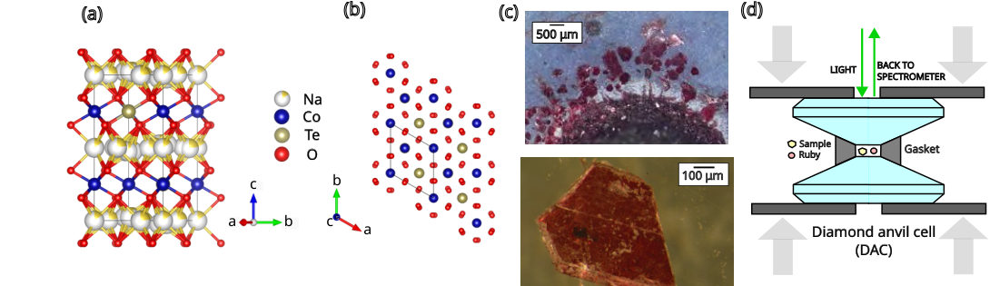
<figcaption class="paper-figure-caption"><b>Fig 1.</b> FIG. 1: (a) Schematic of the crystal structure of hexagonal NCTO generated with a crystallographic information file from Xiao et al. [12]. The partial occupancy of the Na atoms is shown with the partial yellow color. (b) View of the crystal structure along the c axis. Na atoms are hidden here to show the hexagonal arrangement of Co atoms. Each Co has 6 surrounding O atoms making a CoO6 octahedron. In this projection the O atoms of vertically stacked octahedra overlap, so each Co appears surrounded by twelve O atoms rather than six. The black lines indicate the unit cell. (c) Top: ‘Type A’ crystals from the synthesis crucible. A crystal with approximate size of 90 µm was loaded into the...</figcaption>
</figure>
<figure class="paper-figure-card">
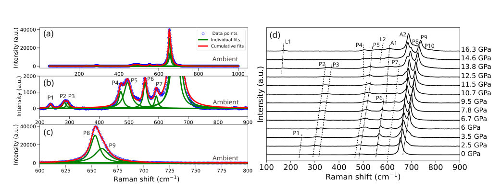
<figcaption class="paper-figure-caption"><b>Fig 2.</b> FIG. 2: (a) Raman spectrum of Crystal A from 50 to 1000 cm−1 at ambient pressure, fitted using Lorentzian functions. The blue points represent the experimental data, the red line denotes the cumulative fit, and the green lines indicate individual peak fits. (b) Zoomed-in view of Fig. 2(a) showing low-intensity Raman modes. (c) Zoomed-in view of Fig. 2(a) showing high-intensity Raman modes. (d) Raman spectra of Crystal A from ambient pressure (marked as 0 GPa) up to 16.3 GPa. The emergence of a new mode L1 above 13.8 GPa is clearly visible.</figcaption>
</figure>
<figure class="paper-figure-card">

<figcaption class="paper-figure-caption"><b>Fig 3.</b> FIG. 3: (a) Evolution of Raman frequencies of Crystal A with pressures up to 16.3 GPa. The graph is divided into three regions - LP: Low pressure regime, MP: Medium pressure regime, HP: High pressure regime. The ambient pressure points are marked in green to indicate that these data are taken from outside the DAC. (b) Evolution of modes between 600 to 800 cm−1, up to 16.3 GPa. These high intensity peaks deconvolute into three to five peaks at various pressures.</figcaption>
</figure>
<figure class="paper-figure-card">

<figcaption class="paper-figure-caption"><b>Fig 4.</b> FIG. 4: (a) Polar plot of normalized intensities of (a) mode P8 and (b) mode P9. The intensities of both modes are normalized by the maximum intensity of the Raman spectrum at the corresponding pressure. Zero degrees refers to the situation where the input polarization is parallel to the linear polarizer in the detection path.</figcaption>
</figure>
</div>

<p><strong>Summary.</strong> This work uses high-pressure Raman spectroscopy on $   ext{Na}_2   ext{Co}_2   ext{TeO}_6$ to study its behavior as a candidate Kitaev Quantum Spin Liquid. By monitoring changes in vibrational modes up to 16.3 GPa, the researchers identified multiple pressure-induced phase transitions. These findings provide experimental evidence for tuning the quantum magnetic interactions in this strongly correlated material.</p>
<p><strong>Why it may be interesting.</strong> The study uses high-pressure spectroscopy to probe the fundamental electronic and structural transitions in a material relevant to exotic quantum magnetism (Kitaev model), providing experimental data on tuning quantum ground states.</p>
<details>
<summary>Detailed structure</summary>
<p><strong>Main problem.</strong> The study investigates pressure-induced phase transitions in $    ext{Na}_2   ext{Co}_2   ext{TeO}_6$, a material candidate for a Kitaev Quantum Spin Liquid (KQSL) state.</p>
<p><strong>Main result.</strong> Raman spectroscopy reveals that the material undergoes structural phase transitions at high pressures, notably marked by the emergence of a new Raman mode ($  ext{L}_1$) above 13.8 GPa.</p>
<p><strong>Method.</strong> The research employed Raman spectroscopy performed inside a Diamond Anvil Cell (DAC) to probe the material's vibrational modes under extreme pressure.</p>
<p><strong>Model / system.</strong> The physical system is $    ext{Na}_2   ext{Co}_2   ext{TeO}_6$, a quasi-2D magnet whose magnetic interactions are hypothesized to be governed by the Kitaev model due to strong spin-orbit coupling in the $   ext{Co}^{2+}$ ions.</p>
<p><strong>Key observables.</strong> Changes in Raman mode frequencies, appearance/disappearance of modes, and changes in the polarization dependence of representative modes.</p>
<p><strong>Important parameters / regimes.</strong> Applied pressure up to 16.3 GPa (and up to 20 GPa in related studies); the pressure evolution is analyzed in Low, Medium, and High Pressure regimes.</p>
<p><strong>Assumptions / limitations.</strong> The analysis assumes that changes in Raman modes are indicative of underlying structural or electronic phase transitions, and that the Kitaev model is relevant for describing the magnetic interactions.</p>
<p><strong>Figures summary.</strong> Figures illustrate the schematic crystal structure, ambient pressure spectra, and waterfall plots showing the evolution of various Raman modes across the applied pressure range, highlighting mode changes at high pressure.</p>
<p><strong>Paper structure.</strong> The paper systematically analyzes the Raman spectra across different pressure regimes (LP, MP, HP), correlating observed spectroscopic changes (mode shifts, new peaks) with potential structural phase transitions in the KQSL candidate.</p>
</details>
<details>
<summary>Abstract</summary>
<p>The quasi-2D magnet Na2Co2TeO6 (NCTO) is a candidate for a Kitaev Quantum Spin Liquid (KQSL) state. Pressure-tuning in such materials is of interest as a potential method to tune the Kitaev exchange interactions, which are strongly dependent on bond geometry. Here we report a Raman spectroscopic study of NCTO inside a diamond anvil cell (DAC) with pressure applied up to 16.3 GPa. Based on the changes in the Raman modes, this pressure range is divided into three regions. The appearance and disappearance of several modes and changes in the polarization dependence of the representative modes, most prominently above 13.8 GPa, point to pressure-induced phase transitions in this material.</p>
</details>
<p><sub><a href="#top">↑ back to top</a></sub></p>

<p><a id="paper-2608.24995"></a></p>
<h3 id="microscopic-modeling-of-the-charge-density-waves-in-the-rare-earth-tritellurides"><a href="http://arxiv.org/abs/2608.24995v1">Microscopic Modeling of the Charge-Density-Waves in the Rare-Earth Tritellurides</a></h3>
<p><strong>Authors:</strong> Sijia Zhao, Julian May-Mann, Ian R. Fisher, Steven A. Kivelson<br>
<strong>Type:</strong> theory · <strong>Category:</strong> strongly correlated electrons · <strong>PDF:</strong> <a href="https://arxiv.org/pdf/2608.24995v1">https://arxiv.org/pdf/2608.24995v1</a><br>
<strong>Analysis basis:</strong> full PDF text, analyzed in chunks
<strong>Topic relevance:</strong> <code>Frenkel-Kontorova</code> <strong>1/5</strong></p>
<div class="figure-strip-hint">↔ Scroll figures horizontally</div>
<div class="paper-figures-scroll">
<figure class="paper-figure-card">

<figcaption class="paper-figure-caption"><b>Fig 1.</b> FIG. 1. (A) Schematic of the single-layer Te-square-net model. Here, t∥, t⊥, and t′ denote the three hopping ampli- tudes, g∥,⊥the corresponding SSH couplings, and K1,2 the longitudinal and transverse stiffnesses. (B) Tight-binding Fermi surface with competing nesting vectors.</figcaption>
</figure>
<figure class="paper-figure-card">

<figcaption class="paper-figure-caption"><b>Fig 2.</b> FIG. 2. (A) Phase diagram showing the nature of the CDW order at T slightly below Tc1 for fixed g∥= 0.75 t/a and K1 = 0.5 t/a2 as a function of g⊥/g∥and K2/K1. Each region is labeled by the ordering wavevector and by its unidirectional (UD) or bidirectional (BD) charac- ter. (B-E) Representative susceptibility maps at T = Tc1 for the four starred points in (A) at which ordering types (2kF , π), (2kF , 2kF ), (2kF , 0), &amp; (π, π) occur. Only one quad- rant of the Brillouin zone is shown.</figcaption>
</figure>
<figure class="paper-figure-card">

<figcaption class="paper-figure-caption"><b>Fig 3.</b> FIG. 3. (A)Temperature evolution of |ux(Q)| at Q = 2π( 3</figcaption>
</figure>
<figure class="paper-figure-card">

<figcaption class="paper-figure-caption"><b>Fig 4.</b> FIG. 4. (A) Temperature dependence of the low-energy non- Goldstone spectrum. Notably, the mirror-odd sliding mode (Mode 3, highlighted by the red shading) is anomalously soft from immediately below Tc1, whereas a secondary soft mode (Mode 4, indicated by the arrow) emerges specifically at T ∗and drives the glide symmetry-breaking instability[46]. (B,C) Real-space profiles of Mode 3 and 4. Comparison with Fig. 3(B) shows that Mode 3 is odd under Mx+y. Background colors label the eight inequivalent site classes of the period- 8 supercell; identically colored sites are related by preserved translations and share the same displacement.</figcaption>
</figure>
<figure class="paper-figure-card">

<figcaption class="paper-figure-caption"><b>Fig 5.</b> FIG. 5. (A) Crystal structure of RTe3. (B) Tempera- ture dependence of |ux(Q)| at 2π( 3</figcaption>
</figure>
</div>

<p><strong>Summary.</strong> This theoretical study models CDW formation in rare-earth tritellurides using a 2D electron-phonon Hamiltonian. By analyzing the free energy and collective excitations, the authors predict a sequence of symmetry-breaking transitions, crucially demonstrating that the CDW state is highly susceptible to mirror-symmetry breaking. This provides a microscopic framework to explain complex experimental observations in these materials.</p>
<p><strong>Why it may be interesting.</strong> The detailed analysis of symmetry breaking (mirror and glide) in a strongly correlated electronic state driven by lattice coupling provides a rich theoretical playground for understanding emergent symmetries in condensed matter systems.</p>
<details>
<summary>Detailed structure</summary>
<p><strong>Main problem.</strong> The paper investigates the origin of surprising experimental observations in rare-earth tritellurides ($  ext{RTe}_3$), specifically focusing on evidence suggesting mirror-symmetry breaking associated with the onset of Charge-Density-Wave (CDW) order.</p>
<p><strong>Main result.</strong> The model predicts a sequence of transitions ($T_{c1} 	o T^* 	o T_{c2}$) and shows that the CDW phase is intrinsically susceptible to mirror-symmetry breaking, which can be amplified by weak perturbations.</p>
<p><strong>Method.</strong> The study employs mean-field theory, Ginzburg-Landau functional expansions, and real-space minimization techniques applied to a 2D electron-phonon model.</p>
<p><strong>Model / system.</strong> The system is the quasi-2D rare-earth tritelluride ($   ext{RTe}<em e- ext_ph="ext{ph">3$), modeled using a 2D electron-phonon Hamiltonian ($\hat{H} = \hat{H}_e + \hat{H}</em>$) for a single Te square-net plane.}} + \hat{H}_{    ext{ph}</p>
<p><strong>Key observables.</strong> CDW order parameter, phonon spectrum (especially low-lying modes), mirror susceptibility ($\chi_M$), and the temperature evolution of symmetry breaking.</p>
<p><strong>Important parameters / regimes.</strong> Coupling ratios ($g_{\perp}/g_{\parallel}$), stiffness ratios ($K_2/K_1$), and temperature ($T_{c1}, T^*, T_{c2}$).</p>
<p><strong>Assumptions / limitations.</strong> The analysis relies on mean-field theory, the adiabatic limit (neglecting quantum phonon fluctuations), and uses commensurate approximations for the ordering vector for numerical tractability.</p>
<p><strong>Figures summary.</strong> Figures illustrate phase diagrams showing CDW instability dependence on parameters, and temperature evolution plots detailing the sequence of transitions and the softening of specific phonon modes (Mode 3 and Mode 4).</p>
<p><strong>Paper structure.</strong> The paper progresses by establishing the basic 2D electron-phonon model, analyzing the high-temperature CDW onset via mean-field theory, and then refining the analysis by examining the low-temperature sequence of symmetry-breaking transitions ($T^*, T_{c2}$) using advanced free energy minimization and mode analysis.</p>
</details>
<details>
<summary>Abstract</summary>
<p>Despite being arguably the simplest and best characterized quasi-2D charge-density-wave (CDW) systems, the rare-earth tritellurides ($R$Te$_3$) continue to yield surprising experimental results, including recent evidence suggestive of mirror-symmetry breaking associated with the onset of CDW order. Motivated by this, we consider a 2D electron-phonon model for a single Te square-net plane, which we analyze using mean-field theory. For an appropriate region of parameter space, we find a finite-temperature continuous transition from the normal state to a unidirectional CDW state with an ordering vector matching that observed experimentally. At lower temperatures, we find a second translation-symmetry-breaking transition, similar to what occurs in $R$Te$_3$ compounds with heavier rare-earth elements. In certain parameter regimes, we also find an intervening mirror-symmetry-breaking transition occurring between the two transitions described above. These results reveal an intrinsic susceptibility to mirror-symmetry breaking in the unidirectional CDW phase, which is relevant to understanding recent experiments on the $R$Te$_3$ compounds.</p>
</details>
<p><sub><a href="#top">↑ back to top</a></sub></p>

<p><a id="paper-2608.25151"></a></p>
<h3 id="no-free-compression-in-quantum-relaxations-for-optimization"><a href="http://arxiv.org/abs/2608.25151v1">No Free Compression in Quantum Relaxations for Optimization</a></h3>
<p><strong>Authors:</strong> Stuart Hadfield<br>
<strong>Type:</strong> theory · <strong>Category:</strong> quantum information and computing · <strong>PDF:</strong> <a href="https://arxiv.org/pdf/2608.25151v1">https://arxiv.org/pdf/2608.25151v1</a><br>
<strong>Analysis basis:</strong> full PDF text, analyzed in chunks
<strong>Topic relevance:</strong> <code>quantum measurements</code> <strong>1/5</strong></p>
<div class="figure-strip-hint">↔ Scroll figures horizontally</div>
<div class="paper-figures-scroll">
<figure class="paper-figure-card">

<figcaption class="paper-figure-caption"><b>Fig 1.</b> FIG. 1. Three levels of compression limits. Majorana-specific. The exact result gives a Θ(n−1) universal worst-case margin despite Θ(n−1/2) typical behavior, together with a Gaussian-complete set of attainable two-point correlations (the covariance body). Designated observables. Standard QRAC information theory bounds the universal margin for fixed binary observables. Arbitrary random-access codes. Nayak’s bound converts width reduction into a copy cost for reliable recovery.</figcaption>
</figure>
</div>

<p><strong>Summary.</strong> This paper analyzes the resource cost of compressing classical information into quantum expectation values using Majorana fermions. It establishes that while the Majorana encoding offers a superior worst-case margin ($\Theta(1/n)$) compared to general bounds ($\Theta(1/\sqrt{n})$), this compression shifts the computational cost into the restricted geometry of the expectation values themselves.</p>
<p><strong>Why it may be interesting.</strong> The work provides quantitative limits on how much classical information can be compressed into quantum expectation values, which is crucial for designing efficient quantum algorithms and resource estimation.</p>
<details>
<summary>Detailed structure</summary>
<p><strong>Main problem.</strong> The paper investigates the resource trade-offs inherent in using quantum relaxations to compress classical decision variables for quantum optimization.</p>
<p><strong>Main result.</strong> The exact universal worst-case margin for the quadratic-Majorana encoding is $\Theta(1/n)$, which is parametrically stronger than generic information-theoretic bounds of $\Theta(1/\sqrt{n})$.</p>
<p><strong>Method.</strong> The authors use minimax optimization techniques, comparing the achievable margin against theoretical bounds derived from quantum random access codes (QRAC) and geometric constraints on the covariance body.</p>
<p><strong>Model / system.</strong> The model focuses on encoding $m$ classical binary variables using $n$ qubits via Pauli correlation encodings, specifically analyzing the complete quadratic-Majorana family.</p>
<p><strong>Key observables.</strong> Universal Margin ($\Delta_{	ext{Maj}}$), Covariance Body ($\Gamma$), expectation values of quadratic observables ($\langle A_{ab} 
angle$).</p>
<p><strong>Important parameters / regimes.</strong> Number of qubits ($n$), number of variables ($m$), and the scaling factors $\Theta(1/n)$ vs $\Theta(1/\sqrt{n})$.</p>
<p><strong>Assumptions / limitations.</strong> The analysis relies on comparing the specific Majorana geometry against general information-theoretic bounds, and the results are highly dependent on the fixed family of observables considered.</p>
<p><strong>Figures summary.</strong> Figure 1 compares three levels of compression limits: Majorana-specific ($\Theta(n^{-1})$ worst-case margin), designated observables (QRAC bound), and arbitrary random-access codes (Nayak's bound).</p>
<p><strong>Paper structure.</strong> The paper progresses by defining the problem via the covariance body, deriving the exact Majorana margin using spectral methods, and then contrasting this result against general information-theoretic bounds derived from QRAC and random access coding theory.</p>
</details>
<details>
<summary>Abstract</summary>
<p>Qubit-efficient quantum relaxations compress classical decision variables into expectation values on substantially fewer qubits. We ask what resource tradeoffs this compression entails for quantum optimization. For the complete quadratic-Majorana encoding on $n$ qubits, pairwise correlators can represent $m=Θ(n^2)$ binary variables. We define the universal margin as the smallest correlator magnitude that can be guaranteed with prescribed signs for every target sign assignment. We show that it is exactly $Δ_{\rm Maj}(n)=\tan\!\left(\fracπ{4n}\right)=Θ(1/n)$, whereas uniformly random sign assignments retain $Θ(1/\sqrt n)$ target-specific margins. The stronger $1/n$ worst-case scaling is Majorana-specific. Moreover, arbitrary density operators and fermionic Gaussian states generate the same quadratic-Majorana covariance body, so non-Gaussian state resources cannot enlarge this two-point relaxation. Beyond Majoranas, standard quantum random access code bounds provide general information-theoretic baselines. For any fixed family of $m$ designated binary observables on $n$ qubits, the universal margin is at most $\sqrt{(2\ln2\;n/m)}$, while arbitrary random access decoding from $N$ copies with constant success probability above $1/2$ requires $nN=Ω(m)$. For a fixed Pauli correlation encoding required to work uniformly over all targets, maintaining a fixed nonzero decoded magnitude under smooth sign decoding therefore requires a rescaling parameter that grows as the available margin shrinks. Thus, while providing substantial qubit savings, compression can shift cost into restricted expectation value geometry, smaller expectation value magnitudes, or more demanding information recovery rather than eliminate it.</p>
</details>
<p><sub><a href="#top">↑ back to top</a></sub></p>

<p><a id="paper-2608.25191"></a></p>
<h3 id="oscillator-based-processing-unit-for-formant-recognition"><a href="http://arxiv.org/abs/2608.25191v1">Oscillator-Based Processing Unit for Formant Recognition</a></h3>
<p><strong>Authors:</strong> Tamás Rudner-Halász, Wolfgang Porod, Gyorgy Csaba<br>
<strong>Type:</strong> theory · <strong>Category:</strong> disordered systems and neural networks · <strong>PDF:</strong> <a href="https://arxiv.org/pdf/2608.25191v1">https://arxiv.org/pdf/2608.25191v1</a><br>
<strong>Analysis basis:</strong> full PDF text, analyzed in chunks
<strong>Topic relevance:</strong> <code>Frenkel-Kontorova</code> <strong>1/5</strong></p>
<div class="figure-strip-hint">↔ Scroll figures horizontally</div>
<div class="paper-figures-scroll">
<figure class="paper-figure-card">

<figcaption class="paper-figure-caption"><b>Fig 1.</b> Figure 1: The architecture of a two-oscillator system. The oscillators are coupled both positively (node 3–3 connection) and negatively (node 6–3 connection). The different types of node, in terms of connectivity, that can occur in a ring oscillator are highlighted on the sides. For generality, the figure shows both positive (in-phase) and negative (anti-phase) couplings, but only positively coupled oscillators are used in this work.</figcaption>
</figure>
<figure class="paper-figure-card">

<figcaption class="paper-figure-caption"><b>Fig 2.</b> Figure 2: Frequency synchronization of oscillators to an input sinusoid. The frequency of a single input sinusoidal voltage generator, connected to a network of 24 uncoupled oscillators, is swept over a range of frequencies. The four groups of oscillators either synchronize to the input signal or not, depending on the frequency of the input. Within each group the oscillators synchronize to the input frequency one by one, until all of them are synchronized; they then run together over a range of frequencies, after which they depart from the group one by one again.</figcaption>
</figure>
<figure class="paper-figure-card">

<figcaption class="paper-figure-caption"><b>Fig 3.</b> Figure 3: Scatter plot of the first and second most dominant frequency components of all the vowels in the dataset. The two lines along which the data points gather possibly arise from the fact that these vowels were recorded by both male and female speakers, and female speakers tend to have a higher pitch.</figcaption>
</figure>
<figure class="paper-figure-card">

<figcaption class="paper-figure-caption"><b>Fig 4.</b> Figure 4: Effect of a time-domain waveform on a single oscillator. (a) Instantaneous frequency of an oscillator that is driven by the vowel waveform through a voltage generator. (b) The vowel in the time domain. (c) The Fourier spectrum of the vowel; the dominant frequency component of this particular vowel is around 350 MHz. Note that the vowel has been sped up, and hence shifted in frequency, by applying it over 1 µs instead of 1 s. The frequency of the oscillator changes while the vowel is spoken on the recording and synchronizes to about 350 MHz, after which it returns to its free-running value of about 330 MHz. This shows that ring oscillators are capable of reacting to external...</figcaption>
</figure>
<figure class="paper-figure-card">

<figcaption class="paper-figure-caption"><b>Fig 5.</b> Figure 5: Frequency response of a layer of oscillators to a single, time-domain input vowel. Oscillators with free-running frequencies close to the peaks of the input spectrum synchronize in frequency to each other for as long as the vowel is spoken, and then return to their original frequencies. Colors are used only for better visibility.</figcaption>
</figure>
</div>

<p><strong>Summary.</strong> This paper proposes an Oscillator-Based Processing Unit (ONN) for speech analysis, aiming for ultra-low-power edge AI by processing raw, time-domain audio signals directly. It uses coupled ring oscillators whose synchronization behavior acts as a frequency filter bank to detect vocal formants. The approach demonstrates high classification accuracy while significantly reducing the computational overhead associated with traditional signal preprocessing.</p>
<p><strong>Why it may be interesting.</strong> The work directly applies concepts of coupled, nonlinear oscillators—a topic relevant to studying complex dynamics in AMO physics—to build a novel, low-power computational device, bridging nonlinear dynamics with AI.</p>
<details>
<summary>Detailed structure</summary>
<p><strong>Main problem.</strong> Developing an energy-efficient, oscillator-based processing unit (ONN) capable of directly processing time-dependent waveforms for tasks like formant recognition.</p>
<p><strong>Main result.</strong> The proposed ONN architectures demonstrated high classification accuracy (up to 93-100%) for vowel recognition using raw or preprocessed time-domain signals.</p>
<p><strong>Method.</strong> The core method uses coupled ring oscillators whose synchronization behavior is leveraged to act as a frequency-detecting filter bank, followed by a conventional classifier.</p>
<p><strong>Model / system.</strong> The system is modeled using coupled ring oscillators governed by ODEs, designed to operate in an analog, frequency-based manner, mimicking the function of a neural network layer.</p>
<p><strong>Key observables.</strong> Oscillator frequency synchronization strength, classification accuracy (e.g., 93% on test set), and the detection of specific frequency components (formants).</p>
<p><strong>Important parameters / regimes.</strong> Operating frequency range (scaled to MHz/GHz), coupling strengths, and the number of oscillator groups used for feature extraction.</p>
<p><strong>Assumptions / limitations.</strong> The primary assumption is that the energy efficiency gained by avoiding preprocessing (like spectrogram generation) outweighs the complexity of the oscillator circuit. The method relies on the separability of formant frequencies.</p>
<p><strong>Figures summary.</strong> Figures illustrate oscillator architecture, frequency sweeping demonstrating synchronization, and the final two-layer classification scheme mapping input waveforms to synchronized output states.</p>
<p><strong>Paper structure.</strong> The paper introduces the ONN concept, details the ODE model and two proposed architectures (formant-based vs. raw waveform), presents results on vowel recognition, and discusses the energy efficiency gains.</p>
</details>
<details>
<summary>Abstract</summary>
<p>Oscillatory neural networks have been successfully applied to a number of computing problems, such as associative memories and computationally hard optimization tasks. In this paper, we show how to use oscillators to process time-dependent waveforms with minimal or no preprocessing. Since preprocessing and first-layer processing are often the most power-hungry steps in neural networks, our findings may open new doors to simple and power-efficient edge-AI devices.</p>
</details>
<p><sub><a href="#top">↑ back to top</a></sub></p>

<p><a id="paper-2608.24989"></a></p>
<h3 id="quantum-spin-hall-crystals-at-fractional-filling-of-twisted-motemath648math"><a href="http://arxiv.org/abs/2608.24989v1">Quantum spin Hall crystals at fractional filling of twisted MoTe$_2$</a></h3>
<p><strong>Authors:</strong> Xiaoyang Shen, Raul Perea-Causin, Christopher Ekman, Jiong-Hao Wang, Hui Liu, Emil J. Bergholtz<br>
<strong>Type:</strong> theory · <strong>Category:</strong> strongly correlated electrons · <strong>PDF:</strong> <a href="https://arxiv.org/pdf/2608.24989v1">https://arxiv.org/pdf/2608.24989v1</a><br>
<strong>Analysis basis:</strong> full PDF text, analyzed in chunks
<strong>Topic relevance:</strong> <code>analog quantum simulation</code> <strong>1/5</strong></p>
<div class="figure-strip-hint">↔ Scroll figures horizontally</div>
<div class="paper-figures-scroll">
<figure class="paper-figure-card">

<figcaption class="paper-figure-caption"><b>Fig 1.</b> FIG. 1. √</figcaption>
</figure>
<figure class="paper-figure-card">

<figcaption class="paper-figure-caption"><b>Fig 2.</b> FIG. 2. (a–d) Crystal band structures of the non-interacting system, the QSHC, the AFMz state, and the IVC crystal, respectively. For the QSHC and AFMz states, the valley-resolved non-Abelian Berry curvature Tr FK of the occupied bands is shown in the insets. For the IVC crystal, the bands are colored by the valley weight wK. (e) The IVC crystal–QSHC phase transition at Vz = 9.5 meV and θ = 5.25◦(red dashed line in (g)), characterized by the indirect HF band gap Ebg and the crystal order parameters strength ∆crystal = P</figcaption>
</figure>
<figure class="paper-figure-card">

<figcaption class="paper-figure-caption"><b>Fig 3.</b> FIG. 3. (a,b) Wilson-loop eigenphases of the occupied bands for the δ = 0 and δ = 1 QSHC, respectively, yielding dif- ferent topological indicators Z2 = 1 and Cs = 1. (c,d) Valley-resolved density modulations ρ √</figcaption>
</figure>
<figure class="paper-figure-card">

<figcaption class="paper-figure-caption"><b>Fig 4.</b> FIG. 4. One band per valley exact diagonalization for the second moir´e band at θ = 5.25◦, Vz = 10meV, and ϵ = 17. Here, λ changes the intervalley interaction strength, ns is the occupation number in valley K, and ns = 5 indicates the symmetric filling Sz = 0 for the tilted sample T1 = (4, 1) and T2 = (1, 4).</figcaption>
</figure>
<figure class="paper-figure-card">

<figcaption class="paper-figure-caption"><b>Fig 5.</b> FIG. 5. Finite-size and band-cutoff convergence of the δ = 0 and δ = 1 QSHC states. The calculations are performed at θ = 5.25◦, ϵ = 20, and Vz = 10 meV. The upper panels show the Hartree–Fock energies and sector splitting Eδ=0 −Eδ=1 versus 1/Nk for Nb = 6; linear extrapolation gives finite positive splitting ∆E∞= 0.17µeV. The lower panels show the Hartree–Fock energies and indirect band gaps versus the number of retained bands Nb at Nk = 9. The δ = 1 state remains energetically favored, while the indirect gap is stable against increasing the band cutoff.</figcaption>
</figure>
</div>

<p><strong>Summary.</strong> This theoretical work predicts and classifies Quantum Spin Hall Crystals (QSHCs) in twisted bilayer $  ext{MoTe}_2$ at fractional filling. Using advanced mean-field calculations, the authors demonstrate a $\sqrt{3} 	imes \sqrt{3}$ QSHC state protected by specific symmetries. The research provides a detailed understanding of how intervalley interactions stabilize these topologically rich, charge-ordered phases.</p>
<p><strong>Why it may be interesting.</strong> The detailed analysis of symmetry protection ($\mathbb{Z}_2$ vs $U(1)_v$) and the quantitative determination of energy splittings in topological phases are highly relevant to understanding emergent order in strongly correlated electronic systems.</p>
<details>
<summary>Detailed structure</summary>
<p><strong>Main problem.</strong> The paper aims to predict and classify interaction-driven Quantum Spin Hall Crystals (QSHCs) that emerge at fractional filling due to the interplay between topology and spontaneous translation-symmetry breaking.</p>
<p><strong>Main result.</strong> The system exhibits a $\sqrt{3} 	imes \sqrt{3}$ QSHC state at $
u = -8/3$ in twisted bilayer $  ext{MoTe}_2$, which forms a complex ground state manifold organized by a $\mathbb{Z}_3$ index.</p>
<p><strong>Method.</strong> The study employs Self-Consistent Hartree-Fock (SCHF) calculations performed in the crystal Brillouin zone, supplemented by topological characterization using Wilson loops and Chern numbers.</p>
<p><strong>Model / system.</strong> The physical system is twisted bilayer $    ext{MoTe}_2$. The analysis uses continuum models and mean-field approximations to study the interplay between topology, interaction effects, and lattice ordering.</p>
<p><strong>Key observables.</strong> Spin-Chern number ($C_s$), valley Chern numbers ($C_K, C_{K'}$), crystal order parameters ($\Phi_\mu(\mathbf{Q})$), and energy splitting ($\Delta E$).</p>
<p><strong>Important parameters / regimes.</strong> Fractional filling ($
u = -8/3$), twist angle ($ heta \approx 5^\circ$), and interaction strength ($\epsilon$).</p>
<p><strong>Assumptions / limitations.</strong> The primary approximation is the use of the Hartree-Fock mean-field theory, which is noted to be limited in capturing fully fractionalized topological orders.</p>
<p><strong>Figures summary.</strong> Figures illustrate the $\sqrt{3} 	imes \sqrt{3}$ QSHC structure, band structures for different phases (QSHC, AFMz, IVC), and phase diagrams showing the competition between these phases as a function of twist angle and interaction strength.</p>
<p><strong>Paper structure.</strong> The paper systematically predicts QSHCs, analyzes the $\mathbb{Z}_3$ organization of the ground state manifold based on relative valley alignment ($\delta$), and quantitatively determines the energetic preference between different topological sectors using first-order energy corrections.</p>
</details>
<details>
<summary>Abstract</summary>
<p>We predict and classify interaction-driven quantum spin Hall crystals (QSHCs), a class of states emerging at fractional filling through an interplay of topology and spontaneous translation-symmetry breaking. QSHCs form nearly degenerate manifolds whose members can realize distinct topological phases protected by time-reversal or valley $U(1)_v$ symmetry, with time-reversal acting nontrivially within the manifold. As a representative of this broad class of states we provide evidence for 9-fold quasi-degenerate $\sqrt{3}\times\sqrt{3}$ charge ordered QSHCs at $ν= -8/3$ of twisted bilayer MoTe$_2$ near a $5^\circ$ twist. Here a $\mathbb{Z}_3$ index organizes states related by lattice translation into three time-reversal invariant states with nontrivial $\mathbb{Z}_2$ topology and three time-reversal related doublets whose individual members spontaneously break time-reversal and carry a $U(1)_v$ protected spin-Chern number. Finally, we determine the conditions that favor QSHCs over closely competing intervalley-coherent crystals.</p>
</details>
<p><sub><a href="#top">↑ back to top</a></sub></p>

<p><a id="paper-2608.25931"></a></p>
<h3 id="size-and-impurity-effects-on-scattering-of-valley-hall-modes-in-gate-defined-bilayer-graphene-superlattices"><a href="http://arxiv.org/abs/2608.25931v1">Size and Impurity Effects on Scattering of Valley Hall Modes in Gate-Defined Bilayer Graphene Superlattices</a></h3>
<p><strong>Authors:</strong> Marcus N. Kanestrøm, Antonio L. R. Manesco, D. O. Oriekhov<br>
<strong>Type:</strong> theory · <strong>Category:</strong> other · <strong>PDF:</strong> <a href="https://arxiv.org/pdf/2608.25931v1">https://arxiv.org/pdf/2608.25931v1</a><br>
<strong>Analysis basis:</strong> full PDF text, analyzed in chunks
<strong>Topic relevance:</strong> <code>analog quantum simulation</code> <strong>1/5</strong></p>
<div class="figure-strip-hint">↔ Scroll figures horizontally</div>
<div class="paper-figures-scroll">
<figure class="paper-figure-card">

<figcaption class="paper-figure-caption"><b>Fig 1.</b> FIG. 1. (a),(b) The impurity free BLG device and the as- sociated layer potentials. Attached leads are the extended portions of the rectangular shape on both the left and right side, where the domain wall enters. (a) The top graphene layer, where the half circle cutouts have a negative bias and the bulk scattering region has a positive bias. (b) The bot- tom graphene layer, which is a mirror copy of the top layer, but this time the interlayer bias is opposite to that of the top layer. Panels (c) and (d) represent a 3D view of devices studied in this paper. The (c) setup is used to study the scattering properties of helical modes with and without im- purity potential V (x, y). The two island...</figcaption>
</figure>
<figure class="paper-figure-card">

<figcaption class="paper-figure-caption"><b>Fig 2.</b> FIG. 2. The band structure of BLG at each of the K-points when an interlayer bias is applied. From the Bulk-Boundary correspondence, one dimensional chiral modes appear in the band gap. The in-gap K valley modes are denoted with the solid blue lines, while the K’ valley modes are the dashed blue lines.</figcaption>
</figure>
<figure class="paper-figure-card">

<figcaption class="paper-figure-caption"><b>Fig 3.</b> FIG. 3. The transverse VHM profile along the electrostatic domain wall for each of the two helical modes present on either side. The electrostatic domain wall is denoted by the vertical red dashed line. What we see is that due to the unequal A and B lattice sites on either side of the domain wall, the wavefunction has two peaks on the inside and outside.</figcaption>
</figure>
<figure class="paper-figure-card">

<figcaption class="paper-figure-caption"><b>Fig 4.</b> FIG. 4. The evanescent decay lengths of the VHM for various interlayer biases and smoothening parameters. To make the domain wall sign shift more like a step-function, a smaller smoothening parameter (Ismooth) is chosen. Whereas a larger smoothening parameter indicates a longer bias sign transition. We see that for small interlayer biases (on the top row), we get larger decay lengths ζ(a). Additionally, for larger Ismooth, we get a longer decay length which is seen on the bottom row. ∆ζ is the difference in decay length units (a) between the chosen smoothening parameter and Ismooth = 1.</figcaption>
</figure>
<figure class="paper-figure-card">

<figcaption class="paper-figure-caption"><b>Fig 5.</b> FIG. 5. The length and energy sweep for the half circle sys- tem versus the scattering probability. For this plot, the mode originates from lead zero and can tunnel to seven other pos- sible modes, before leaving the scattering region. At a length of 250a, there is an increased likelihood that the mode tun- nels to other possible channels. Different energies at a fixed length, can enhance certain modes or suppress them.</figcaption>
</figure>
</div>

<p><strong>Summary.</strong> This work simulates the behavior of topologically-protected valley Hall modes in patterned bilayer graphene superlattices. Using tight-binding methods, the authors show that impurities can facilitate resonant tunneling between islands, while the topological protection remains robust against certain device imperfections. This research advances the understanding of engineered topological quantum transport in 2D materials.</p>
<p><strong>Why it may be interesting.</strong> The study directly models topological edge states and their interaction with disorder (impurities), which is highly relevant for understanding robust quantum transport in mesoscopic systems.</p>
<details>
<summary>Detailed structure</summary>
<p><strong>Main problem.</strong> The paper investigates the scattering properties of topologically-protected valley Hall modes in engineered bilayer graphene superlattices.</p>
<p><strong>Main result.</strong> Resonant tunneling via impurities enhances island overlap, and the topological protection remains robust even with misalignment of gate patterns.</p>
<p><strong>Method.</strong> The study employs tight-binding simulations and analyzes the scattering matrix (S-matrix) to probe quantum transport phenomena.</p>
<p><strong>Model / system.</strong> The system is Bernal bilayer graphene (BLG) patterned into superlattices using gate-defined islands, creating a sign-alternating gap structure that hosts valley Hall modes.</p>
<p><strong>Key observables.</strong> Scattering probability, resonant tunneling enhancement, and the persistence of topological protection.</p>
<p><strong>Important parameters / regimes.</strong> Interlayer bias ($U_0$), impurity potential strength, and the separation distance ($L$) between superlattice islands.</p>
<p><strong>Assumptions / limitations.</strong> The model assumes the ability to engineer a device with an alternating gap structure and treats the system using a spinless, nearest-neighbor tight-binding Hamiltonian.</p>
<p><strong>Figures summary.</strong> Figures illustrate the device setup, the VHM profile near domain walls, and energy sweeps showing oscillatory tunneling effects dependent on island separation.</p>
<p><strong>Paper structure.</strong> The paper first establishes the theoretical framework using a tight-binding Hamiltonian, then analyzes the existence of topologically-protected valley Hall modes, and finally investigates how impurity scattering and island geometry affect these modes.</p>
</details>
<details>
<summary>Abstract</summary>
<p>In the present paper we perform a tight-binding simulation of gate-defined islands in Bernal bilayer graphene (BLG). The inversion of the gap sign on the boundaries of the islands creates topologically-protected valley Hall modes. We focus on the specific questions of whether the valley Hall modes around such islands could serve as a host for quantum walks or simulate weakly coupled systems, and how their tunneling is affected by in-gap impurities. In addition, we discuss the effect of misalignment of top and bottom gate patterns on the tunneling properties between islands. Our main results show that resonant tunneling via an impurity enhances overlap between superlattice islands, while misalignment does not break topological protection over a wide parameter regime. In addition, we study the two-island geometry and show that it is possible to leverage suppressed scattering to place islands more densely on a single sample.</p>
</details>
<p><sub><a href="#top">↑ back to top</a></sub></p>

<p><a id="paper-2608.25010"></a></p>
<h3 id="the-bottleneck-dimension-of-quantum-operations"><a href="http://arxiv.org/abs/2608.25010v1">The bottleneck dimension of quantum operations</a></h3>
<p><strong>Authors:</strong> Pavel Sekatski<br>
<strong>Type:</strong> theory · <strong>Category:</strong> quantum information and computing · <strong>PDF:</strong> <a href="https://arxiv.org/pdf/2608.25010v1">https://arxiv.org/pdf/2608.25010v1</a><br>
<strong>Analysis basis:</strong> full PDF text, analyzed in chunks
<strong>Topic relevance:</strong> <code>quantum measurements</code> <strong>1/5</strong></p>
<div class="figure-strip-hint">↔ Scroll figures horizontally</div>
<div class="paper-figures-scroll">
<figure class="paper-figure-card">

<figcaption class="paper-figure-caption"><b>Fig 1.</b> FIG. 5. Hierarchy of the dimension-bottleneck properties. The sets of instrument families {Ia|x} that are d-embeddable, d-simulable and d-compressible are strictly nested.</figcaption>
</figure>
<figure class="paper-figure-card">

<figcaption class="paper-figure-caption"><b>Fig 2.</b> FIG. 7. The four decompositions of a set of instruments {Ia|x} featuring a latent instrument acting on the d-dimensional system. They differ only in which classical variables are exchanged between the encoder, the latent instrument and the decoder. Concretely, the “blind” decompositions are obtained by forbidding the auxiliary classical communication between the encoder and the latent instrument.</figcaption>
</figure>
</div>

<p><strong>Summary.</strong> This paper develops a rigorous, operational framework to define the 'effective coherent quantum dimension' of noisy quantum operations. It introduces and distinguishes three related concepts—$d$-compressibility, $d$-simulability, and $d$-embeddability—which quantify how much quantum information can be processed despite noise. The work culminates in calculating the precise noise threshold required for a universal quantum processor to maintain a specific level of coherence.</p>
<p><strong>Why it may be interesting.</strong> This work provides fundamental theoretical tools for quantifying the operational limitations of noisy quantum hardware, which is crucial for designing fault-tolerant quantum computation protocols.</p>
<details>
<summary>Detailed structure</summary>
<p><strong>Main problem.</strong> The paper aims to characterize the effective coherent quantum dimension of programmable quantum operations when noise prevents coherence across the full nominal Hilbert space.</p>
<p><strong>Main result.</strong> It establishes a strict hierarchy among three notions—$d$-embeddability $\implies d$-simulability $\implies d$-compressibility—and derives the white-noise threshold for $d$-embeddability of noisy unitary channels.</p>
<p><strong>Method.</strong> The authors introduce an operational, basis-independent framework using decompositions involving encoders, latent instruments, and decoders to formalize the dimension bottleneck.</p>
<p><strong>Model / system.</strong> The model involves programmable quantum devices acting on a Hilbert space of dimension $n$, characterized by sets of quantum instruments $\{I_{a|x}\}$ mapping between systems of dimensions $n$ and $m$.</p>
<p><strong>Key observables.</strong> The primary observables are the three notions of dimension bottleneck ($d$-compressibility, $d$-simulability, $d$-embeddability) and the white-noise threshold $f_2(d, n)$.</p>
<p><strong>Important parameters / regimes.</strong> The key parameters are the nominal dimension $n$, the bottleneck dimension $d$, and the noise level (related to the white-noise threshold).</p>
<p><strong>Assumptions / limitations.</strong> The analysis relies on the assumption of a 'dimensional bottleneck' and, in later parts, the use of the Haar measure for random unitaries to prove optimality.</p>
<p><strong>Figures summary.</strong> Figures illustrate the structural decompositions corresponding to $d$-compressibility, $d$-simulability, and $d$-embeddability for both single channels and sets of instruments.</p>
<p><strong>Paper structure.</strong> The paper first introduces the operational framework and defines the three notions, establishing the hierarchy. It then analyzes special cases (measurements, states) and progresses to derive the optimal decomposition strategy and calculate the exact white-noise threshold for noisy unitary channels.</p>
</details>
<details>
<summary>Abstract</summary>
<p>Programmable quantum devices nominally act on a Hilbert space whose dimension grows exponentially with the number of constituents, but the presence of noise makes it unlikely that they remain coherent across all of this immense Hilbert space. Then, what is the effective coherent quantum dimension that should be associated with such imperfect devices? To answer this question we here introduce an operational basis-independent framework which imposes a dimension bottleneck on the programmable transformations. Concretely we ask how strongly the quantum information they process can be compressed. Formalizing this idea we identify three inequivalent notions, termed $d$-compressibility, $d$-simulability and $d$-embeddability, which differ in the causal structure used to impose the bottleneck and form a strict hierarchy. The framework unifies several existing notions: joint measurability and simulability of quantum measurements, and the absolute dimensionality of state ensembles, are recovered as special cases. We illustrate the hierarchy with noisy qubit measurements in complementary bases, and we determine the white-noise thresholds at which the set of all noisy unitary channels in dimension $n$, a noisy universal quantum processor, becomes $d$-compressible, $d$-simulable and $d$-embeddable. The thresholds confirm the expectation -- maintaining coherence across the full Hilbert space becomes increasingly demanding as the nominal dimension $n$ increases.</p>
</details>
<p><sub><a href="#top">↑ back to top</a></sub></p>
<h2 id="other-papers-10">Other papers (10)</h2>
<p><em>Papers from primary archives without highlighted authors or any topic match. Click to expand.</em></p>
<details>
<summary>Show other papers</summary>

<p><a id="paper-2608.25414"></a></p>
<h3 id="affine-profile-stabilizer-thresholds-for-magic-in-codeword-stabilized-quantum-codes"><a href="http://arxiv.org/abs/2608.25414v1">Affine-Profile Stabilizer Thresholds for Magic in Codeword-Stabilized Quantum Codes</a></h3>
<p><strong>Authors:</strong> Li-Yi Hsu, En-Jui Kuo<br>
<strong>Type:</strong> theory · <strong>Category:</strong> quantum information and computing · <strong>PDF:</strong> <a href="https://arxiv.org/pdf/2608.25414v1">https://arxiv.org/pdf/2608.25414v1</a><br>
<strong>Analysis basis:</strong> full PDF text, analyzed in chunks</p>
<div class="figure-strip-hint">↔ Scroll figures horizontally</div>
<div class="paper-figures-scroll">
<figure class="paper-figure-card">

<figcaption class="paper-figure-caption"><b>Fig 1.</b> FIG. 1: Small-scale numerical checks of the witness-induced RoM lower-bound principle. Panel (a) shows the two-qubit family |ψθ⟩= cos θ |00⟩+ sin θ |11⟩: the blue curve is the exact RoM computed by the stabilizer-decomposition linear program, while the orange curve is the tilted-CHSH stabilizer-threshold lower bound. Panel (b) shows the symmetric line ϕ = π/4 in the generalized three-qubit W family. Again, the blue curve is the exact RoM and the orange curve is the optimized Bell-type lower bound B⋆/6; the vertical dashed line marks the standard |W⟩state. Panel (c) plots the same three-qubit scan as exact RoM versus Bell-certified lower bound. The diagonal line is y = x, and the points...</figcaption>
</figure>
</div>
<p><strong>Summary.</strong> This paper introduces a novel geometric framework to determine the robustness of magic for quantum states encoded by Codeword-Stabilized codes. By developing a CWS-adapted magic-witness, the authors reduce a complex quantum optimization problem to a tractable classical affine-incidence problem. This yields precise, computable lower bounds on quantum resource robustness based purely on the geometry of the underlying classical word set.</p>
<p><strong>Why it may be interesting.</strong> It provides a powerful geometric tool (affine geometry) to analyze quantum resource bounds (magic robustness) in QEC codes, connecting abstract quantum optimization to concrete classical combinatorial problems.</p>
<details>
<summary>Detailed structure</summary>
<p><strong>Main problem.</strong> The paper develops a framework to compute lower bounds on the robustness of magic ($R(
ho)$) for quantum states arising from Codeword-Stabilized (CWS) codes.</p>
<p><strong>Main result.</strong> The quantum optimization problem is exactly reduced to a classical affine-incidence problem over the CWS word set, providing a fixed-parameter algorithm for calculating the stabilizer threshold.</p>
<p><strong>Method.</strong> The authors use a CWS-adapted magic-witness framework to isolate codeword coherence, converting the quantum optimization into a geometric problem involving affine intersections of the classical word set.</p>
<p><strong>Model / system.</strong> The model involves CWS codes, which provide a unified graph-state description for both stabilizer and non-additive quantum error-correcting codes. The states analyzed are coherent superpositions of individual word states.</p>
<p><strong>Key observables.</strong> Robustness of magic ($R(
ho)$), the stabilizer threshold ($eta_{	ext{coh}}$), and the affine-intersection profile $M_r(C)$.</p>
<p><strong>Important parameters / regimes.</strong> The size of the word set ($K$), the number of qubits ($n$), and the structure of the classical word set $C \subseteq \mathbb{F}_2^n$.</p>
<p><strong>Assumptions / limitations.</strong> The certificate relies on calibrated Pauli measurements and is a magic witness, not a device-independent Bell inequality. The analysis is most meaningful when the target state is the coherent CWS superposition.</p>
<p><strong>Figures summary.</strong> Figures illustrate the lower-bound principle using CHSH/W-type scans, comparing exact RoM versus the calculated lower bound.</p>
<p><strong>Paper structure.</strong> The paper progresses by defining the coherence witness, deriving the general bound, specializing to the equal-weight case where phase optimization collapses, and finally establishing the exact reduction to the classical affine-incidence problem.</p>
</details>
<details>
<summary>Abstract</summary>
<p>Codeword-stabilized quantum codes give a unified graph-state description of stabilizer and nonadditive quantum error-correcting codes. Although each individual CWS word state is stabilizer, coherent superpositions of different word states can be nonstabilizer. We develop a CWS-adapted magic-witness framework that isolates this codeword coherence and converts it into certified lower bounds on robustness of magic.   The main result is an exact reduction of the stabilizer threshold of a natural CWS coherence witness to a finite-geometric problem over the classical CWS word set. For general weighted superpositions, the threshold is computed by enumerating affine intersections and affine-quadratic phases. For equal-weight superpositions, the phase optimization collapses, and the threshold is determined entirely by how many CWS words can lie in affine flats of each dimension. Thus a quantum optimization over stabilizer states becomes a classical affine-incidence problem.   This reduction yields a fixed-parameter algorithm, an analytic lower bound for an infinite union-stabilizer family, and exact rational certificates for several standard nonadditive CWS examples. The framework also clarifies why exact enumeration fails for large structured families and identifies the remaining task as an affine-intersection problem. The result provides a geometric mechanism by which nonlinear CWS word sets generate certifiable magic.</p>
</details>
<p><sub><a href="#top">↑ back to top</a></sub></p>
<hr>
<p>
<a href="index.html">← Index</a>
 · <a href="papers_03.html">← Previous</a> · <a href="papers_05.html">Next →</a>
</p>
<hr>

</body>
</html>
